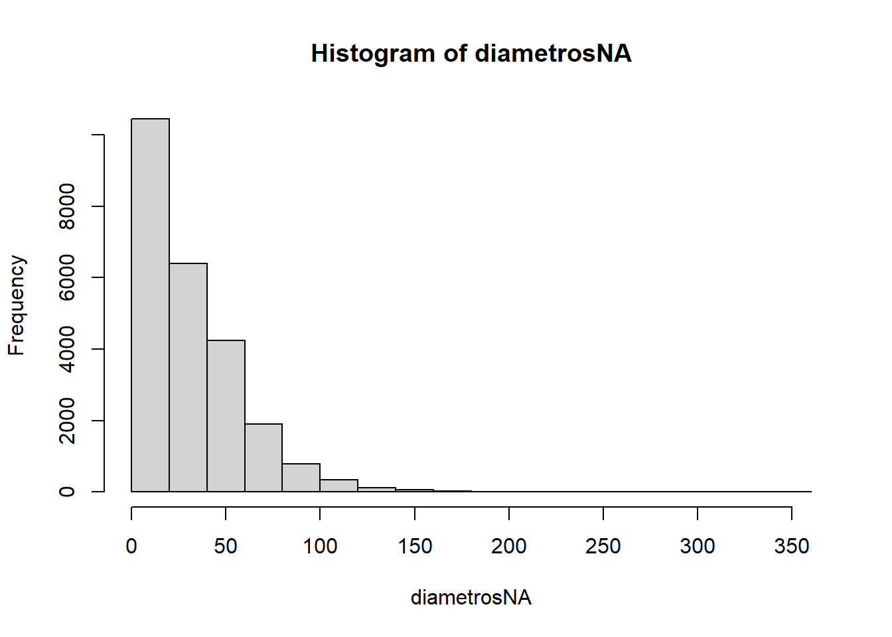
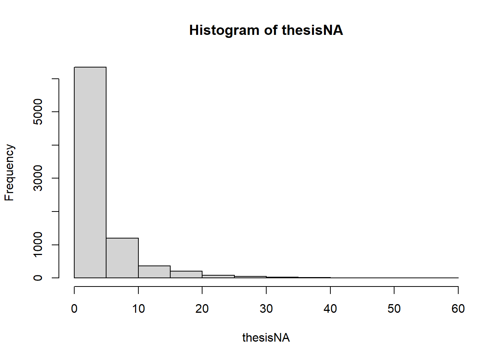

diametros <- Trees_In_Camden$Diameter.In.Centimetres.At.Breast.HeightΠροσδιορισμός κατανομής
1 Εντροπία
Πολλές φορές προκύπτει η ανάγκη, έχοντας τις τυχαίες τιμές μιας μεταβλητής (πχ κάποια ύψη), να δούμε πώς αυτές είναι κατανεμημένες. Αν δεν έχουμε καμιά απολύτως πληροφορία γι’ αυτές, η πιο εύλογη υπόθεση, δηλαδή η υπόθεση με τη μικρότερη μεροληψία, είναι το να δεχτούμε ότι αυτές ακολουθούν την ομοιόμορφη κατανομή (βλ. εδώ κι εδώ). Αυτό διότι δεν έχουμε λόγο να υποθέσουμε χωρίς περεταίρω στοιχεία ότι έχουμε πχ μια τάξη με ψηλούς μαθητές και λίγους κοντούς ή το αντίστροφο ή μια τάξη που έχει μόνο κοντούς και μόνο ψηλούς μαθητές κτλ. Για να κάνουμε τέτοιες παραδοχές, θα πρέπει να έχουμε κάποιες πληροφορίες παραπάνω που να δικαιολογούν τον έναν ή τον άλλο προσανατολισμό.
Αν τώρα γνωρίζουμε τη μέση τιμή και την τυπική απόκλιση των δειγμάτων, τότε η πιο εύλογη υπόθεση είναι ότι ακολουθούν την κανονική κατανομή. Όλα αυτά συνδέονται με την έννοια της εντροπίας που έχουμε δει αλλού (βλ. υποενότητα Ποικιλότητα Shannon), αλλά δεν θα εμβαθύνουμε παραπάνω. Στις παρακάτω ενότητες θα δούμε πώς βρίσκουμε την κατανομή που ενδεχομένως ν’ ακολουθούν κάποιες τιμές, αν τις γνωρίζουμε όλες τους, όχι μόνο τη μέση τιμή και την τυπική τους απόκλιση.
2 Έλεγχος Kolmogorov-Smirnov για συνεχείς κατανομές
Από τη σελίδα αυτή αντλήσαμε κάποια δεδομένα για τα δέντρα της περιοχής Camden και τα αποθηκεύσαμε σε ένα αρχείο ονόματι Trees_In_Camden.csv, του οποίου παρουσιάζουμε τις 100 πρώτες γραμμές.
| Number.Of.Trees | Sequence | Site.Name | Contract.Area | Scientific.Name | Common.Name | Inspection.Date | Inspection.Due.Date | Height.In.Metres | Spread.In.Metres | Diameter.In.Centimetres.At.Breast.Height | Maturity | Physiological.Condition | Tree.Set.To.Be.Removed | Removal.Reason | Newly.Planted | Outstanding.Job.Count | Outstanding.Job.Number | Outstanding.Job.Description | Capital.Asset.Value.For.Amenity.Trees | Carbon.Storage.In.Kilograms | Gross.Carbon.Sequestration.Per.Year.In.Kilograms | Pollution.Removal.Per.Year.In.Grams | Ward.Code | Ward.Name | Easting | Northing | Longitude | Latitude | Location | Identifier | Spatial.Accuracy | Last.Uploaded | Organisation.URI |
|---|---|---|---|---|---|---|---|---|---|---|---|---|---|---|---|---|---|---|---|---|---|---|---|---|---|---|---|---|---|---|---|---|---|
| 1 | 9 | FARRIER STREET | Highways | Vacant Tree Pit | Vacant Tree Pit | NA | NA | NA | NA | NA | NA | NA | No | NA | NA | NA | NA | NA | NA | NA | NA | NA | E05013655 | Camden Town | 528980 | 184402 | -0.141401 | 51.54378 | (51.543785, -0.141401) | 00062751 | Captured By Camden Officer | 04/08/2023 08:30:30 PM | http://opendatacommunities.org/id/london-borough-council/camden |
| 1 | 54 | Estate 1-158 Dorney (cons) | Housing | Quercus ilex | Oak - Evergreen, Holm | 06/06/2023 | 2026/2027 | 3.0 | 3.0 | 10 | Early mature | Good | No | NA | Not Applicable | NA | NA | NA | 1078.80 | NA | NA | NA | E05013667 | Primrose Hill | 527397 | 184402 | -0.164216 | 51.54415 | (51.544146, -0.164216) | 00063825 | Captured By Camden Officer | 04/08/2023 08:30:29 PM | http://opendatacommunities.org/id/london-borough-council/camden |
| 1 | 32 | POLYGON ROAD | Highways | Temporary Aborted Tree Pit | NA | NA | NA | NA | NA | NA | NA | NA | No | NA | NA | NA | NA | NA | NA | NA | NA | NA | E05013669 | St Pancras and Somers Town | 529753 | 183159 | -0.130729 | 51.53244 | (51.532442, -0.130729) | 00062856 | Captured By Camden Officer | 04/08/2023 08:30:36 PM | http://opendatacommunities.org/id/london-borough-council/camden |
| 1 | 59 | Castle Road Estate 3 | Housing | Vacant Tree Pit | Vacant Tree Pit | 22/02/2023 | 2025/2026 | NA | NA | NA | NA | NA | No | NA | NA | NA | NA | NA | NA | NA | NA | NA | E05013655 | Camden Town | 528761 | 184456 | -0.144541 | 51.54432 | (51.544321, -0.144541) | 00063268 | Captured By Camden Officer | 04/08/2023 08:30:27 PM | http://opendatacommunities.org/id/london-borough-council/camden |
| 1 | 12 | Broadfield Estate 2 | Housing | Tilia europaea | Lime - Common | 04/03/2021 | 2023/2024 | 19.0 | 6.0 | 70 | Mature | Fair | No | NA | Not Applicable | 1 | 356414 | Remove epicormic growth | 37003.04 | 369.6 | 8.1 | 162.2 | E05013670 | South Hampstead | 525975 | 184638 | -0.184635 | 51.54658 | (51.546582, -0.184635) | 00002521 | Captured By Camden Officer | 04/08/2023 08:30:27 PM | http://opendatacommunities.org/id/london-borough-council/camden |
| 1 | 90 | Wendling Estate | Housing | Sorbus aucuparia | Rowan, Mountain Ash | 28/07/2023 | 2026/2027 | 8.0 | 4.0 | 29 | Semi-mature | Good | No | NA | Not Applicable | NA | NA | NA | 6048.50 | 76.3 | 4.4 | 39.3 | E05013658 | Gospel Oak | 528028 | 185330 | -0.154787 | 51.55234 | (51.552341, -0.154787) | 00033420 | Captured By Camden Officer | 04/08/2023 08:30:40 PM | http://opendatacommunities.org/id/london-borough-council/camden |
| 1 | 23 | St Pancras Court Estate | Housing | Quercus ilex | Oak - Evergreen, Holm | 06/03/2023 | 2025/2026 | 15.0 | 10.0 | 53 | Mature | Fair | No | NA | Not Applicable | NA | NA | NA | 22727.74 | NA | NA | NA | NA | NA | 526735 | 190291 | -0.171646 | 51.59722 | (51.59722, -0.171646) | 00041597 | Captured By Camden Officer | 04/08/2023 08:30:37 PM | http://opendatacommunities.org/id/london-borough-council/camden |
| 1 | 61 | HARTLAND ROAD | Highways | Vacant Tree Pit | Vacant Tree Pit | 30/05/2023 | 2026/2027 | NA | NA | NA | NA | NA | No | NA | NA | NA | NA | NA | NA | NA | NA | NA | E05013655 | Camden Town | 528591 | 184268 | -0.147056 | 51.54267 | (51.542671, -0.147056) | 00063809 | Captured By Camden Officer | 04/08/2023 08:30:32 PM | http://opendatacommunities.org/id/london-borough-council/camden |
| 3 | 260 | Branch Hill Estate | Housing | Fraxinus excelsior | Ash | 14/04/2021 | 2024/2025 | 6.0 | 7.0 | 9 | Young | Good | No | NA | Not Applicable | NA | NA | NA | 873.84 | NA | NA | NA | E05013657 | Frognal | 525910 | 186075 | -0.185049 | 51.55951 | (51.559513, -0.185049) | 00060810 | Captured By Camden Officer | 04/08/2023 08:30:27 PM | http://opendatacommunities.org/id/london-borough-council/camden |
| 1 | 37 | SAVERNAKE ROAD | Highways | Koelreuteria paniculata | Golden Rain Tree | NA | NA | 3.0 | 2.0 | 4 | Young | Good | No | NA | 1st year | NA | NA | NA | 153.43 | NA | NA | NA | E05013658 | Gospel Oak | 527756 | 185689 | -0.158577 | 51.55563 | (51.555634, -0.158577) | 00062678 | Captured By Camden Officer | 04/08/2023 08:30:37 PM | http://opendatacommunities.org/id/london-borough-council/camden |
| 1 | 35 | HADLEY STREET | Highways | Fraxinus excelsior | Ash | 30/06/2020 | 2023/2024 | 6.0 | 4.0 | 16 | Semi-mature | Good | No | NA | Not Applicable | NA | NA | NA | 2485.57 | 18.9 | 1.8 | 31.8 | E05013655 | Camden Town | 528675 | 184515 | -0.145757 | 51.54487 | (51.544872, -0.145757) | 00053776 | Captured By Camden Officer | 04/08/2023 08:30:31 PM | http://opendatacommunities.org/id/london-borough-council/camden |
| 1 | 215 | Coopers Lane Estate | Housing | Vacant Tree Pit | Vacant Tree Pit | 31/01/2023 | 2025/2026 | NA | NA | NA | NA | NA | No | NA | NA | NA | NA | NA | NA | NA | NA | NA | E05013669 | St Pancras and Somers Town | 529886 | 183179 | -0.128799 | 51.53259 | (51.532592, -0.128799) | 00063151 | Captured By Camden Officer | 04/08/2023 08:30:28 PM | http://opendatacommunities.org/id/london-borough-council/camden |
| 1 | 47 | CANTELOWES ROAD | Highways | Parrotia persica vanessa | Persian Ironwood | NA | NA | 3.0 | 2.0 | 4 | Young | Good | No | NA | 1st year | NA | NA | NA | 153.43 | NA | NA | NA | E05013654 | Camden Square | 529622 | 184707 | -0.132040 | 51.54638 | (51.546381, -0.13204) | 00063647 | Captured By Camden Officer | 04/08/2023 08:30:27 PM | http://opendatacommunities.org/id/london-borough-council/camden |
| 1 | 26 | Westcroft Estate 4 | Housing | Gleditsia triacanthos | Honey Locust | 14/04/2021 | 2024/2025 | 8.0 | 5.0 | 19 | Semi-mature | Fair | No | NA | Not Applicable | NA | NA | NA | 3115.59 | NA | NA | NA | NA | NA | 524260 | 185967 | -0.208882 | 51.55891 | (51.558908, -0.208882) | 00038209 | Captured By Camden Officer | 04/08/2023 08:30:40 PM | http://opendatacommunities.org/id/london-borough-council/camden |
| 1 | 32 | Lymington Road Estate | Housing | Acer campestre | Maple - Field | 22/02/2021 | 2023/2024 | 10.0 | 6.0 | 22 | Semi-mature | Good | No | NA | Not Applicable | NA | NA | NA | 4177.14 | 98.6 | 5.0 | 135.0 | E05013671 | West Hampstead | 525779 | 184910 | -0.187358 | 51.54908 | (51.549075, -0.187358) | 00013242 | Captured By Camden Officer | 04/08/2023 08:30:34 PM | http://opendatacommunities.org/id/london-borough-council/camden |
| 1 | 40 | Westcroft Estate 1 | Housing | Acer pseudoplatanus | Sycamore | 14/04/2021 | 2024/2025 | 9.0 | 7.0 | 32 | Semi-mature | Fair | No | NA | Not Applicable | NA | NA | NA | 9819.53 | NA | NA | NA | NA | NA | 524286 | 186036 | -0.208477 | 51.55952 | (51.559523, -0.208477) | 00038166 | Captured By Camden Officer | 04/08/2023 08:30:40 PM | http://opendatacommunities.org/id/london-borough-council/camden |
| 1 | 113 | Denton Estate | Housing | Pinus sylvestris | Pine - Scots | 19/03/2020 | 2022/2023 | 2.0 | 2.0 | 5 | Young | Good | No | NA | Not Applicable | NA | NA | NA | 269.70 | NA | NA | NA | E05013660 | Haverstock | 528388 | 184521 | -0.149897 | 51.54499 | (51.544994, -0.149897) | 00058337 | Captured By Camden Officer | 04/08/2023 08:30:29 PM | http://opendatacommunities.org/id/london-borough-council/camden |
| 1 | 1 | GLENMORE ROAD | Highways | Sorbus aria | Whitebeam | 16/09/2021 | 2024/2025 | 9.0 | 5.0 | 39 | Mature | Fair | No | NA | Not Applicable | NA | NA | NA | 10209.82 | 320.3 | 10.3 | 76.0 | E05013652 | Belsize | 527227 | 184937 | -0.166480 | 51.54899 | (51.54899, -0.16648) | 00007732 | Captured By Camden Officer | 04/08/2023 08:30:31 PM | http://opendatacommunities.org/id/london-borough-council/camden |
| 1 | 8 | AVENUE ROAD | Highways | Platanus x hispanica | London plane | 08/09/2021 | 2024/2025 | 20.0 | 16.0 | 96 | Mature | Good | No | NA | Not Applicable | NA | NA | NA | 89480.46 | 2595.1 | 35.5 | 1029.0 | E05013667 | Primrose Hill | 526913 | 183888 | -0.171380 | 51.53963 | (51.539635, -0.17138) | 00001308 | Captured By Camden Officer | 04/08/2023 08:30:26 PM | http://opendatacommunities.org/id/london-borough-council/camden |
| 1 | 49 | RODERICK ROAD | Highways | Malus Tschonoskii | Apple - Crab | NA | NA | 3.0 | 2.0 | 4 | Young | Good | No | NA | 1st year | NA | NA | NA | 115.07 | NA | NA | NA | E05013658 | Gospel Oak | 527799 | 185542 | -0.158013 | 51.55430 | (51.5543, -0.158013) | 00063617 | Captured By Camden Officer | 04/08/2023 08:30:37 PM | http://opendatacommunities.org/id/london-borough-council/camden |
| 1 | 1 | BUCKNALL STREET | Highways | Carpinus betulus Lucas | Hornbeam - European | NA | NA | 3.0 | 2.0 | 4 | Young | Good | No | NA | 1st year | NA | NA | NA | 172.61 | NA | NA | NA | E05013662 | Holborn and Covent Garden | 530039 | 181399 | -0.127251 | 51.51656 | (51.516556, -0.127251) | 00063552 | Captured By Camden Officer | 04/08/2023 08:30:27 PM | http://opendatacommunities.org/id/london-borough-council/camden |
| 1 | 60 | Regents Park Estate 7 | Housing | Malus domestica cultivar | Apple | 19/10/2022 | 2025/2026 | 5.0 | 3.0 | 7 | Young | Good | No | NA | Not Applicable | NA | NA | NA | 317.17 | NA | NA | NA | E05013668 | Regents Park | 528971 | 182744 | -0.142145 | 51.52889 | (51.528885, -0.142145) | 00059597 | Captured By Camden Officer | 04/08/2023 08:30:36 PM | http://opendatacommunities.org/id/london-borough-council/camden |
| 1 | 17 | Mornington and Albert Street Estate | Housing | Vacant Tree Pit | Vacant Tree Pit | 11/10/2022 | 2025/2026 | NA | NA | NA | NA | NA | No | NA | NA | NA | NA | NA | NA | NA | NA | NA | E05013668 | Regents Park | 528965 | 183384 | -0.141992 | 51.53464 | (51.534642, -0.141992) | 00062860 | Captured By Camden Officer | 04/08/2023 08:30:35 PM | http://opendatacommunities.org/id/london-borough-council/camden |
| 1 | 126 | Kiln Place Estate | Housing | Koelreuteria paniculata | Golden Rain Tree | 04/03/2020 | 2022/2023 | 2.5 | 1.5 | 4 | Young | Good | No | NA | Not Applicable | NA | NA | NA | 153.43 | NA | NA | NA | E05013658 | Gospel Oak | 528286 | 185534 | -0.150995 | 51.55412 | (51.554122, -0.150995) | 00057566 | Captured By Camden Officer | 04/08/2023 08:30:33 PM | http://opendatacommunities.org/id/london-borough-council/camden |
| 1 | 244 | Branch Hill Estate | Housing | Sambucus nigra | Elder | 14/04/2021 | 2024/2025 | 4.0 | 4.0 | 12 | Semi-mature | Good | No | NA | Not Applicable | NA | NA | NA | 1035.65 | NA | NA | NA | E05013657 | Frognal | 525930 | 186011 | -0.184788 | 51.55894 | (51.558937, -0.184788) | 00060785 | Captured By Camden Officer | 04/08/2023 08:30:27 PM | http://opendatacommunities.org/id/london-borough-council/camden |
| 1 | 52 | Regent Square Estate | Housing | Prunus 'Amanogawa' | Cherry | 09/01/2023 | 2025/2026 | 6.0 | 3.0 | 22 | Semi-mature | Good | No | NA | Not Applicable | NA | NA | NA | 3132.85 | NA | NA | NA | E05013666 | Kings Cross | 530307 | 182621 | -0.122936 | 51.52748 | (51.527476, -0.122936) | 00057722 | Captured By Camden Officer | 04/08/2023 08:30:36 PM | http://opendatacommunities.org/id/london-borough-council/camden |
| 1 | 54 | ROBERT STREET | Highways | Vacant Tree Pit | Vacant Tree Pit | NA | NA | NA | NA | NA | NA | NA | No | NA | NA | NA | NA | NA | NA | NA | NA | NA | E05013668 | Regents Park | 529153 | 182705 | -0.139535 | 51.52849 | (51.528493, -0.139535) | 00062939 | Captured By Camden Officer | 04/08/2023 08:30:36 PM | http://opendatacommunities.org/id/london-borough-council/camden |
| 1 | 21 | QUADRANT GROVE | Highways | Betula albosinensis Fasc. | Birch - Chinese Red | NA | NA | 3.0 | 2.0 | 4 | Young | Good | No | NA | 1st year | NA | NA | NA | 115.07 | NA | NA | NA | E05013660 | Haverstock | 528039 | 185119 | -0.154707 | 51.55044 | (51.550444, -0.154707) | 00063593 | Captured By Camden Officer | 04/08/2023 08:30:36 PM | http://opendatacommunities.org/id/london-borough-council/camden |
| 1 | 260 | SWISS COTTAGE OPEN SPACE (LS) | Parks | Temporary Aborted Tree Pit | NA | 08/06/2023 | 2026/2027 | NA | NA | NA | NA | NA | No | NA | NA | NA | NA | NA | NA | NA | NA | NA | E05013667 | Primrose Hill | 526749 | 184241 | -0.173612 | 51.54284 | (51.54284, -0.173612) | 00063829 | Captured By Camden Officer | 04/08/2023 08:30:38 PM | http://opendatacommunities.org/id/london-borough-council/camden |
| 1 | 228 | West End Sidings Estate | Housing | Ailanthus altissima | Tree of Heaven | 23/02/2021 | 2023/2024 | 5.0 | 4.0 | 17 | Semi-mature | Fair | No | NA | Not Applicable | NA | NA | NA | 2771.33 | NA | NA | NA | E05013656 | Fortune Green | 524782 | 184915 | -0.201734 | 51.54934 | (51.54934, -0.201734) | 00058364 | Captured By Camden Officer | 04/08/2023 08:30:40 PM | http://opendatacommunities.org/id/london-borough-council/camden |
| 1 | 177 | Regents Park Estate 3 | Housing | Vacant Tree Pit | Vacant Tree Pit | 18/10/2022 | 2025/2026 | NA | NA | NA | NA | NA | No | NA | NA | NA | NA | NA | NA | NA | NA | NA | E05013668 | Regents Park | 529105 | 182944 | -0.140142 | 51.53066 | (51.530658, -0.140142) | 00062916 | Captured By Camden Officer | 04/08/2023 08:30:36 PM | http://opendatacommunities.org/id/london-borough-council/camden |
| 1 | 298 | Branch Hill Estate | Housing | Acer pseudoplatanus | Sycamore | 30/03/2021 | 2023/2024 | 16.0 | 15.0 | 87 | Mature | Good | No | NA | Not Applicable | NA | NA | NA | 72582.05 | NA | NA | NA | E05013657 | Frognal | 525988 | 186110 | -0.183919 | 51.55982 | (51.559815, -0.183919) | 00032150 | Captured By Camden Officer | 04/08/2023 08:30:27 PM | http://opendatacommunities.org/id/london-borough-council/camden |
| 1 | 88 | Curnock St Estate | Housing | Acer pseudoplatanus | Sycamore | 11/01/2023 | 2025/2026 | 14.0 | 8.0 | 39 | Mature | Fair | No | NA | Not Applicable | NA | NA | NA | 13126.91 | 287.6 | 8.1 | 309.6 | E05013669 | St Pancras and Somers Town | 529154 | 183708 | -0.139152 | 51.53751 | (51.537506, -0.139152) | 00005260 | Captured By Camden Officer | 04/08/2023 08:30:28 PM | http://opendatacommunities.org/id/london-borough-council/camden |
| 1 | 44 | LEVERTON STREET | Highways | Malus 'Mokum' | Apple - Crab | NA | NA | 3.0 | 2.0 | 4 | Young | Good | No | NA | 1st year | NA | NA | NA | 115.07 | NA | NA | NA | E05013663 | Kentish Town North | 529103 | 185477 | -0.139239 | 51.55342 | (51.553419, -0.139239) | 00063565 | Captured By Camden Officer | 04/08/2023 08:30:33 PM | http://opendatacommunities.org/id/london-borough-council/camden |
| 1 | 81 | KENTISH TOWN PRIMARY | Education | Pyrus unidentified species | Pear | 15/12/2021 | 2024/2025 | 3.0 | 2.0 | 7 | Young | Good | No | NA | Not Applicable | NA | NA | NA | 317.17 | NA | NA | NA | E05013664 | Kentish Town South | 529079 | 185103 | -0.139728 | 51.55006 | (51.55006, -0.139728) | 00059822 | Captured By Camden Officer | 04/08/2023 08:30:33 PM | http://opendatacommunities.org/id/london-borough-council/camden |
| 1 | 59 | Regents Park Estate 7 | Housing | Malus domestica cultivar | Apple | 19/10/2022 | 2025/2026 | 5.0 | 3.0 | 6 | Young | Good | No | NA | Not Applicable | NA | NA | NA | 233.02 | NA | NA | NA | E05013668 | Regents Park | 528971 | 182739 | -0.142146 | 51.52884 | (51.528843, -0.142146) | 00059596 | Captured By Camden Officer | 04/08/2023 08:30:36 PM | http://opendatacommunities.org/id/london-borough-council/camden |
| 1 | 100 | St Silas Street Estate 2 | Housing | Ginkgo biloba | Maidenhair tree | 08/04/2020 | 2023/2024 | 4.0 | 1.0 | 4 | Young | Good | No | NA | Not Applicable | NA | NA | NA | 172.61 | 1.4 | 0.5 | 3.2 | E05013660 | Haverstock | 528107 | 184866 | -0.153825 | 51.54816 | (51.548158, -0.153825) | 00054511 | Captured By Camden Officer | 04/08/2023 08:30:37 PM | http://opendatacommunities.org/id/london-borough-council/camden |
| NA | 35 | Kingsland Estate | Housing | Buddleia Species | Butterfly bush | 24/03/2021 | 2023/2024 | NA | NA | NA | NA | Good | No | NA | NA | NA | NA | NA | NA | NA | NA | NA | E05013667 | Primrose Hill | 527498 | 183612 | -0.163050 | 51.53702 | (51.537022, -0.16305) | 00060154 | Captured By Camden Officer | 04/08/2023 08:30:33 PM | http://opendatacommunities.org/id/london-borough-council/camden |
| 1 | 47 | Dunboyne Road Estate | Housing | Acer platanoides | Maple - Norway | 06/03/2020 | 2022/2023 | 13.0 | 5.0 | 29 | Semi-mature | Good | No | NA | Not Applicable | NA | NA | NA | 7258.21 | 188.8 | 7.2 | 164.9 | E05013658 | Gospel Oak | 527771 | 185403 | -0.158472 | 51.55306 | (51.553055, -0.158472) | 00005680 | Captured By Camden Officer | 04/08/2023 08:30:29 PM | http://opendatacommunities.org/id/london-borough-council/camden |
| 1 | 34 | St Pancras Court Estate | Housing | Acer pseudoplatanus | Sycamore | 06/03/2023 | 2025/2026 | 6.0 | 0.0 | 12 | Not Applicable | Fair | No | NA | Not Applicable | NA | NA | NA | 1380.87 | NA | NA | NA | NA | NA | 526771 | 190336 | -0.171105 | 51.59761 | (51.597613, -0.171105) | 00052852 | Captured By Camden Officer | 04/08/2023 08:30:37 PM | http://opendatacommunities.org/id/london-borough-council/camden |
| 1 | 15 | MILLMAN STREET | Highways | Malus yunnanensis veitchii | Apple | 15/06/2022 | 2025/2026 | 5.0 | 4.0 | 11 | Semi-mature | Good | No | NA | Not Applicable | NA | NA | NA | 783.21 | 0.7 | 0.3 | 3.8 | E05013662 | Holborn and Covent Garden | 530695 | 182123 | -0.117529 | 51.52291 | (51.522909, -0.117529) | 00049102 | Captured By Camden Officer | 04/08/2023 08:30:35 PM | http://opendatacommunities.org/id/london-borough-council/camden |
| 1 | 56 | Westcroft Estate 4 | Housing | Fagus sylvatica | Beech - Common | 14/04/2021 | 2024/2025 | 2.0 | 1.0 | 4 | Young | Good | No | NA | Not Applicable | NA | NA | NA | 153.43 | NA | NA | NA | NA | NA | 524246 | 185878 | -0.209114 | 51.55811 | (51.55811, -0.209114) | 00055951 | Captured By Camden Officer | 04/08/2023 08:30:40 PM | http://opendatacommunities.org/id/london-borough-council/camden |
| 1 | 237 | Branch Hill Estate | Housing | Ilex aquifolium | Holly | 14/04/2021 | 2024/2025 | 5.0 | 5.0 | 15 | Mature | Fair | No | NA | Not Applicable | NA | NA | NA | 2157.61 | NA | NA | NA | E05013657 | Frognal | 525949 | 185987 | -0.184519 | 51.55871 | (51.558714, -0.184519) | 00060776 | Captured By Camden Officer | 04/08/2023 08:30:27 PM | http://opendatacommunities.org/id/london-borough-council/camden |
| 9 | 294 | Branch Hill Estate | Housing | Prunus laurocerasus | Laurel - Cherry | 30/03/2021 | 2023/2024 | 5.0 | 14.0 | 15 | Semi-mature | Fair | No | NA | Not Applicable | NA | NA | NA | 1618.21 | NA | NA | NA | E05013657 | Frognal | 525999 | 186101 | -0.183768 | 51.55973 | (51.559727, -0.183768) | 00002331 | Captured By Camden Officer | 04/08/2023 08:30:27 PM | http://opendatacommunities.org/id/london-borough-council/camden |
| 1 | 46 | Regents Park Estate 5 | Housing | Malus domestica cultivar | Apple | 19/10/2022 | 2025/2026 | 5.0 | 2.0 | 5 | Young | Good | No | NA | Not Applicable | NA | NA | NA | 179.80 | NA | NA | NA | E05013668 | Regents Park | 529038 | 182847 | -0.141136 | 51.52980 | (51.529801, -0.141136) | 00059573 | Captured By Camden Officer | 04/08/2023 08:30:36 PM | http://opendatacommunities.org/id/london-borough-council/camden |
| 1 | 20 | UPPER TERRACE | Highways | Ulmus New Horizon | Elm | 05/10/2021 | 2024/2025 | 5.0 | 2.0 | 7 | Young | Good | No | NA | Not Applicable | NA | NA | NA | 528.62 | NA | NA | NA | E05013659 | Hampstead Town | 526143 | 186128 | -0.181673 | 51.55994 | (51.559936, -0.181673) | 00056249 | Captured By Camden Officer | 04/08/2023 08:30:39 PM | http://opendatacommunities.org/id/london-borough-council/camden |
| 1 | 27 | Highgate Road Estate | Housing | Betula ermanii | Birch - Erman's | 16/04/2020 | 2023/2024 | 9.0 | 4.0 | 16 | Semi-mature | Good | No | NA | Not Applicable | NA | NA | NA | 1657.04 | 27.6 | 2.7 | 27.3 | E05013661 | Highgate | 528543 | 185804 | -0.147189 | 51.55648 | (51.556484, -0.147189) | 00045125 | Captured By Camden Officer | 04/08/2023 08:30:32 PM | http://opendatacommunities.org/id/london-borough-council/camden |
| 1 | 18 | HAWLEY PRIMARY | Education | Carpinus betulus | Hornbeam | 15/03/2023 | 2025/2026 | 5.0 | 3.0 | 8 | Young | Good | No | NA | Not Applicable | NA | NA | NA | 690.44 | NA | NA | NA | E05013655 | Camden Town | 528870 | 184281 | -0.143040 | 51.54273 | (51.542728, -0.14304) | 00063530 | Captured By Camden Officer | 04/08/2023 08:30:32 PM | http://opendatacommunities.org/id/london-borough-council/camden |
| 1 | 55 | LANGTRY CHILDREN'S CENTRE | Education | Vacant Tree Pit | Vacant Tree Pit | 24/02/2023 | 2025/2026 | NA | NA | NA | NA | NA | No | NA | NA | NA | NA | NA | NA | NA | NA | NA | E05013665 | Kilburn | 525693 | 183686 | -0.189041 | 51.53810 | (51.538097, -0.189041) | 00055179 | Captured By Camden Officer | 04/08/2023 08:30:33 PM | http://opendatacommunities.org/id/london-borough-council/camden |
| 1 | 83 | Kiln Place Estate | Housing | Acer pseudoplatanus | Sycamore | 04/03/2020 | 2022/2023 | 14.0 | 9.0 | 32 | Semi-mature | Good | No | NA | Not Applicable | NA | NA | NA | 8837.58 | 237.0 | 8.2 | 348.2 | E05013658 | Gospel Oak | 528336 | 185555 | -0.150264 | 51.55430 | (51.554297, -0.150264) | 00032792 | Captured By Camden Officer | 04/08/2023 08:30:33 PM | http://opendatacommunities.org/id/london-borough-council/camden |
| 1 | 52 | SOMALI ROAD | Highways | Lagerstroemia indica Rosa Nova | Crape myrtle | NA | NA | 3.0 | 2.0 | 4 | Young | Good | No | NA | 1st year | NA | NA | NA | 191.79 | NA | NA | NA | E05013656 | Fortune Green | 524511 | 185520 | -0.205422 | 51.55484 | (51.554837, -0.205422) | 00063458 | Captured By Camden Officer | 04/08/2023 08:30:37 PM | http://opendatacommunities.org/id/london-borough-council/camden |
| 1 | 608 | Maiden Lane Estate | Housing | Zelkova serrata | Japanese zelkova | 28/10/2022 | 2025/2026 | 4.5 | 3.5 | 12 | Not Applicable | Good | No | NA | Not Applicable | NA | NA | NA | 1726.09 | NA | NA | NA | E05013654 | Camden Square | 529988 | 184283 | -0.126920 | 51.54249 | (51.54249, -0.12692) | 00062972 | Captured By Camden Officer | 04/08/2023 08:30:34 PM | http://opendatacommunities.org/id/london-borough-council/camden |
| 1 | 47 | TOTTENHAM COURT ROAD | Highways | Ulmus New Horizon | Elm | NA | NA | 3.0 | 2.0 | 4 | Young | Good | No | NA | 1st year | NA | NA | NA | 191.79 | NA | NA | NA | E05013653 | Bloomsbury | 529599 | 181735 | -0.133461 | 51.51967 | (51.519673, -0.133461) | 00063038 | Captured By Camden Officer | 04/08/2023 08:30:39 PM | http://opendatacommunities.org/id/london-borough-council/camden |
| 1 | 48 | LUPTON STREET | Highways | Celtis australis | European nettle | NA | NA | 3.0 | 2.0 | 4 | Young | Good | No | NA | 1st year | NA | NA | NA | 191.79 | NA | NA | NA | E05013663 | Kentish Town North | 529137 | 185582 | -0.138710 | 51.55436 | (51.554355, -0.13871) | 00063583 | Captured By Camden Officer | 04/08/2023 08:30:34 PM | http://opendatacommunities.org/id/london-borough-council/camden |
| 1 | 5 | COTLEIGH ROAD | Highways | Acer platanoides | Maple - Norway | 14/09/2021 | 2024/2025 | 8.0 | 4.0 | 34 | Mature | Fair | No | NA | Not Applicable | NA | NA | NA | 7759.73 | 229.9 | 7.1 | 56.0 | E05013665 | Kilburn | 525351 | 184289 | -0.193746 | 51.54359 | (51.543586, -0.193746) | 00004647 | Captured By Camden Officer | 04/08/2023 08:30:28 PM | http://opendatacommunities.org/id/london-borough-council/camden |
| 1 | 74 | Churchway Estate | Housing | Alnus cordata | Alder - Italian | 07/02/2023 | 2025/2026 | 5.0 | 1.5 | 8 | Young | Good | No | NA | Not Applicable | NA | NA | NA | 613.72 | NA | NA | NA | E05013669 | St Pancras and Somers Town | 529728 | 182769 | -0.131220 | 51.52894 | (51.528943, -0.13122) | 00063206 | Captured By Camden Officer | 04/08/2023 08:30:28 PM | http://opendatacommunities.org/id/london-borough-council/camden |
| 1 | 36 | Westcroft Estate 4 | Housing | Gleditsia triacanthos | Honey Locust | 14/04/2021 | 2024/2025 | 7.0 | 7.0 | 25 | Semi-mature | Good | No | NA | Not Applicable | NA | NA | NA | 5394.03 | NA | NA | NA | NA | NA | 524285 | 185890 | -0.208544 | 51.55821 | (51.558214, -0.208544) | 00051795 | Captured By Camden Officer | 04/08/2023 08:30:40 PM | http://opendatacommunities.org/id/london-borough-council/camden |
| 10 | 263 | PARLIAMENT HILL | Education | Sambucus nigra | Elder | 14/12/2021 | 2024/2025 | 5.0 | 2.0 | 9 | Semi-mature | Fair | No | NA | Not Applicable | NA | NA | NA | 524.30 | 9.9 | 1.2 | 737.6 | E05013661 | Highgate | 528311 | 185905 | -0.150507 | 51.55745 | (51.557448, -0.150507) | 00040521 | Captured By Camden Officer | 04/08/2023 08:30:36 PM | http://opendatacommunities.org/id/london-borough-council/camden |
| 1 | 225 | Weedington Road Estate 2 | Housing | Vacant Tree Pit | Vacant Tree Pit | 27/07/2023 | 2026/2027 | NA | NA | NA | NA | NA | No | NA | NA | NA | NA | NA | NA | NA | NA | NA | E05013658 | Gospel Oak | 528176 | 185269 | -0.152681 | 51.55176 | (51.55176, -0.152681) | 00063900 | Captured By Camden Officer | 04/08/2023 08:30:40 PM | http://opendatacommunities.org/id/london-borough-council/camden |
| 1 | 2 | FERDINAND STREET | Highways | Liquidambar styraciflua Worple | Sweetgum | NA | NA | 3.0 | 2.0 | 4 | Young | Good | No | NA | 1st year | NA | NA | NA | 153.43 | NA | NA | NA | E05013660 | Haverstock | 528441 | 184484 | -0.149151 | 51.54464 | (51.544643, -0.149151) | 00062728 | Captured By Camden Officer | 04/08/2023 08:30:30 PM | http://opendatacommunities.org/id/london-borough-council/camden |
| 1 | 1188 | WATERLOW PARK (LS) | Parks | Ulmus glabra | Elm - Wych | 15/04/2020 | 2023/2024 | 10.0 | 6.0 | 27 | Semi-mature | Fair | No | NA | Not Applicable | NA | NA | NA | 8738.33 | NA | NA | NA | E05013661 | Highgate | 528547 | 187166 | -0.146637 | 51.56872 | (51.568721, -0.146637) | 00059796 | Captured By Camden Officer | 04/08/2023 08:30:39 PM | http://opendatacommunities.org/id/london-borough-council/camden |
| 1 | 107 | CHALK FARM ROAD | Highways | Vacant Tree Pit | Vacant Tree Pit | NA | NA | NA | NA | NA | NA | NA | No | NA | NA | NA | NA | NA | NA | NA | NA | NA | E05013655 | Camden Town | 528650 | 184207 | -0.146236 | 51.54211 | (51.542111, -0.146236) | 00062828 | Captured By Camden Officer | 04/08/2023 08:30:28 PM | http://opendatacommunities.org/id/london-borough-council/camden |
| 1 | 12 | MURRAY ST,CAMDEN SQ PLAYCENTRE (CL) | Corporate Landlord | Sorbus aria | Whitebeam | 08/06/2021 | 2024/2025 | 9.0 | 4.0 | 25 | Semi-mature | Fair | No | NA | Not Applicable | NA | NA | NA | 4495.02 | 114.7 | 5.0 | 35.1 | E05013654 | Camden Square | 529577 | 184495 | -0.132766 | 51.54448 | (51.544483, -0.132766) | 00003082 | Captured By Camden Officer | 04/08/2023 08:30:35 PM | http://opendatacommunities.org/id/london-borough-council/camden |
| 1 | 40 | Kilburn Gate Estate | Housing | Liriodendron tulipifera | Tulip Tree | 12/05/2021 | 2024/2025 | 13.0 | 4.0 | 20 | Young | Good | No | NA | Not Applicable | NA | NA | NA | 3452.18 | 3.2 | 0.7 | 96.5 | E05013665 | Kilburn | 525656 | 183422 | -0.189664 | 51.53573 | (51.535731, -0.189664) | 00041492 | Captured By Camden Officer | 04/08/2023 08:30:33 PM | http://opendatacommunities.org/id/london-borough-council/camden |
| 1 | 10 | Dunboyne Road Estate | Housing | Prunus avium | Cherry - Wild, Gean | 06/03/2020 | 2022/2023 | 10.0 | 8.0 | 34 | Mature | Good | No | NA | Not Applicable | NA | NA | NA | 7482.59 | 292.5 | 10.6 | 199.5 | E05013658 | Gospel Oak | 527735 | 185300 | -0.159019 | 51.55214 | (51.552141, -0.159019) | 00005645 | Captured By Camden Officer | 04/08/2023 08:30:29 PM | http://opendatacommunities.org/id/london-borough-council/camden |
| 1 | 366 | Branch Hill Estate | Housing | Tilia europaea | Lime - Common | 14/04/2021 | 2024/2025 | 23.0 | 10.0 | 78 | Mature | Fair | No | NA | Not Applicable | NA | NA | NA | 45944.18 | NA | NA | NA | E05013657 | Frognal | 526043 | 186000 | -0.183164 | 51.55881 | (51.558814, -0.183164) | 00033260 | Captured By Camden Officer | 04/08/2023 08:30:27 PM | http://opendatacommunities.org/id/london-borough-council/camden |
| 1 | 33 | BEDFORD PLACE | Highways | Koelreuteria paniculata | Golden Rain Tree | NA | NA | 4.0 | 2.0 | 4 | Young | Good | No | NA | 1st year | NA | NA | NA | 153.43 | NA | NA | NA | E05013653 | Bloomsbury | 530263 | 181787 | -0.123881 | 51.51999 | (51.519992, -0.123881) | 00063337 | Captured By Camden Officer | 04/08/2023 08:30:26 PM | http://opendatacommunities.org/id/london-borough-council/camden |
| 1 | 31 | RHYL COMMUNITY PRIMARY | Education | Vacant Tree Pit | Vacant Tree Pit | 23/03/2023 | 2025/2026 | NA | NA | NA | NA | NA | No | NA | NA | NA | NA | NA | NA | NA | NA | NA | E05013660 | Haverstock | 528309 | 184788 | -0.150938 | 51.54741 | (51.547412, -0.150938) | 00058663 | Captured By Camden Officer | 04/08/2023 08:30:36 PM | http://opendatacommunities.org/id/london-borough-council/camden |
| 1 | 15 | SANDALL ROAD | Highways | Sorbus intermedia | Whitebeam - Swedish | 01/06/2020 | 2023/2024 | 4.0 | 1.5 | 6 | Young | Good | No | NA | Not Applicable | NA | NA | NA | 310.70 | NA | NA | NA | E05013664 | Kentish Town South | 529430 | 184709 | -0.134813 | 51.54644 | (51.546439, -0.134813) | 00058933 | Captured By Camden Officer | 04/08/2023 08:30:37 PM | http://opendatacommunities.org/id/london-borough-council/camden |
| 1 | 44 | Westcroft Estate 4 | Housing | Crataegus crus-galli | Hawthorn - Cockspur thorn | 14/04/2021 | 2024/2025 | 5.0 | 3.0 | 10 | Semi-mature | Fair | No | NA | Not Applicable | NA | NA | NA | 647.28 | NA | NA | NA | NA | NA | 524200 | 185931 | -0.209762 | 51.55860 | (51.558598, -0.209762) | 00038200 | Captured By Camden Officer | 04/08/2023 08:30:40 PM | http://opendatacommunities.org/id/london-borough-council/camden |
| 1 | 566 | WATERLOW PARK (LS) | Parks | Ilex aquifolium | Holly | 22/03/2022 | 2024/2025 | 7.0 | 4.0 | 19 | Semi-mature | Fair | No | NA | Not Applicable | NA | NA | NA | 3461.77 | 42.3 | 2.7 | 44.5 | E05013661 | Highgate | 528743 | 187096 | -0.143838 | 51.56805 | (51.568054, -0.143838) | 00021425 | Captured By Camden Officer | 04/08/2023 08:30:39 PM | http://opendatacommunities.org/id/london-borough-council/camden |
| 1 | 20 | LOWER MERTON RISE | Highways | Malus 'Rudolph' | Apple - Crab | NA | NA | 3.0 | 2.0 | 4 | Young | Good | No | NA | 1st year | NA | NA | NA | 115.07 | NA | NA | NA | E05013667 | Primrose Hill | 527271 | 184117 | -0.166140 | 51.54161 | (51.541613, -0.16614) | 00063421 | Captured By Camden Officer | 04/08/2023 08:30:34 PM | http://opendatacommunities.org/id/london-borough-council/camden |
| 1 | 49 | YORK WAY | Highways | Liquidambar styraciflua | Sweet Gum | 23/08/2022 | 2025/2026 | 5.0 | 2.0 | 6 | Young | Fair | No | NA | Not Applicable | NA | NA | NA | 310.70 | 1.0 | 0.2 | 9.3 | NA | NA | 530332 | 183193 | -0.122363 | 51.53261 | (51.532611, -0.122363) | 00054803 | Captured By Camden Officer | 04/08/2023 08:30:40 PM | http://opendatacommunities.org/id/london-borough-council/camden |
| 1 | 339 | Branch Hill Estate | Housing | Fraxinus excelsior | Ash | 14/04/2021 | 2024/2025 | 15.0 | 7.0 | 26 | Semi-mature | Good | No | NA | Not Applicable | NA | NA | NA | 6563.46 | NA | NA | NA | E05013657 | Frognal | 525969 | 185976 | -0.184238 | 51.55861 | (51.558611, -0.184238) | 00002259 | Captured By Camden Officer | 04/08/2023 08:30:27 PM | http://opendatacommunities.org/id/london-borough-council/camden |
| 1 | 25 | Hilgrove Estate 2 | Housing | Sorbus aria | Whitebeam | 04/03/2021 | 2023/2024 | 12.0 | 8.0 | 43 | Mature | Good | No | NA | Not Applicable | NA | NA | NA | 15957.69 | 438.7 | 12.4 | 232.1 | E05013670 | South Hampstead | 526568 | 184222 | -0.176239 | 51.54271 | (51.54271, -0.176239) | 00010481 | Captured By Camden Officer | 04/08/2023 08:30:32 PM | http://opendatacommunities.org/id/london-borough-council/camden |
| 1 | 62 | Cromer Street Estate 1 | Housing | Vacant Tree Pit | Vacant Tree Pit | 06/01/2023 | 2025/2026 | NA | NA | NA | NA | NA | No | NA | NA | NA | NA | NA | NA | NA | NA | NA | E05013666 | Kings Cross | 530445 | 182679 | -0.120927 | 51.52796 | (51.527962, -0.120927) | 00063131 | Captured By Camden Officer | 04/08/2023 08:30:28 PM | http://opendatacommunities.org/id/london-borough-council/camden |
| 1 | 97 | West Kentish Town Estate 2 | Housing | Temporary Aborted Tree Pit | NA | 15/04/2020 | 2023/2024 | NA | NA | NA | NA | NA | No | NA | NA | NA | NA | NA | NA | NA | NA | NA | E05013660 | Haverstock | 528466 | 185010 | -0.148599 | 51.54937 | (51.549367, -0.148599) | 00057610 | Captured By Camden Officer | 04/08/2023 08:30:40 PM | http://opendatacommunities.org/id/london-borough-council/camden |
| 1 | 37 | JUDD STREET | Highways | Vacant Tree Pit | Vacant Tree Pit | 27/07/2023 | 2026/2027 | NA | NA | NA | NA | NA | No | NA | NA | NA | NA | NA | NA | NA | NA | NA | E05013653 | Bloomsbury | 530113 | 182732 | -0.125696 | 51.52852 | (51.528516, -0.125696) | 00063902 | Captured By Camden Officer | 04/08/2023 08:30:33 PM | http://opendatacommunities.org/id/london-borough-council/camden |
| 1 | 100 | Westcroft Estate 1 | Housing | Prunus 'Accolade' | Cherry | 14/04/2021 | 2024/2025 | 2.5 | 1.0 | 4 | Young | Good | No | NA | Not Applicable | NA | NA | NA | 115.07 | NA | NA | NA | NA | NA | 524241 | 185974 | -0.209151 | 51.55898 | (51.558979, -0.209151) | 00058444 | Captured By Camden Officer | 04/08/2023 08:30:40 PM | http://opendatacommunities.org/id/london-borough-council/camden |
| 1 | 31 | Westcroft Estate 1 | Housing | Fraxinus excelsior | Ash | 14/04/2021 | 2024/2025 | 19.0 | 12.0 | 60 | Mature | Fair | No | NA | Not Applicable | NA | NA | NA | 27185.90 | NA | NA | NA | NA | NA | 524149 | 185923 | -0.210503 | 51.55854 | (51.558539, -0.210503) | 00007551 | Captured By Camden Officer | 04/08/2023 08:30:40 PM | http://opendatacommunities.org/id/london-borough-council/camden |
| 1 | 48 | RODERICK ROAD | Highways | Parrotia persica vanessa | Persian Ironwood | NA | NA | 3.0 | 2.0 | 4 | Young | Good | No | NA | 1st year | NA | NA | NA | 153.43 | NA | NA | NA | E05013658 | Gospel Oak | 527796 | 185555 | -0.158052 | 51.55442 | (51.554417, -0.158052) | 00063616 | Captured By Camden Officer | 04/08/2023 08:30:37 PM | http://opendatacommunities.org/id/london-borough-council/camden |
| 1 | 39 | Kilburn Gate Estate | Housing | Aesculus hippocastanum | Horse Chestnut | 12/05/2021 | 2024/2025 | 7.0 | 4.0 | 16 | Young | Good | No | NA | Not Applicable | NA | NA | NA | 2761.74 | 24.1 | 2.0 | 37.0 | E05013665 | Kilburn | 525685 | 183478 | -0.189226 | 51.53623 | (51.536229, -0.189226) | 00041491 | Captured By Camden Officer | 04/08/2023 08:30:33 PM | http://opendatacommunities.org/id/london-borough-council/camden |
| 1 | 130 | Westcroft Close Estate | Housing | Acer saccharinum | Maple - Silver | 22/02/2021 | 2023/2024 | 13.0 | 5.0 | 20 | Semi-mature | Fair | No | NA | Not Applicable | NA | NA | NA | 2876.82 | 99.7 | 4.1 | 126.4 | NA | NA | 524262 | 185646 | -0.208969 | 51.55602 | (51.556023, -0.208969) | 00041678 | Captured By Camden Officer | 04/08/2023 08:30:40 PM | http://opendatacommunities.org/id/london-borough-council/camden |
| 1 | 165 | Clarence Way Estate NW1 | Housing | Vacant Tree Pit | Vacant Tree Pit | 03/03/2023 | 2025/2026 | NA | NA | NA | NA | NA | No | NA | NA | NA | NA | NA | NA | NA | NA | NA | E05013655 | Camden Town | 528889 | 184391 | -0.142722 | 51.54371 | (51.543711, -0.142722) | 00063342 | Captured By Camden Officer | 04/08/2023 08:30:28 PM | http://opendatacommunities.org/id/london-borough-council/camden |
| 1 | 60 | Ingestre Road Estate | Housing | Quercus robur | Oak - Common, Pedunculate | 28/02/2023 | 2025/2026 | 13.0 | 8.0 | 30 | Semi-mature | Good | No | NA | Not Applicable | NA | NA | NA | 8738.33 | 119.5 | 6.2 | 132.5 | E05013663 | Kentish Town North | 528793 | 185803 | -0.143591 | 51.55642 | (51.556424, -0.143591) | 00011273 | Captured By Camden Officer | 04/08/2023 08:30:33 PM | http://opendatacommunities.org/id/london-borough-council/camden |
| 0 | 29 | CARLINGFORD ROAD | Highways | Vacant Tree Pit | Vacant Tree Pit | NA | NA | NA | NA | NA | NA | NA | No | NA | NA | NA | NA | NA | NA | NA | NA | NA | E05013659 | Hampstead Town | 526839 | 185733 | -0.171777 | 51.55624 | (51.556235, -0.171777) | 00063122 | Captured By Camden Officer | 04/08/2023 08:30:27 PM | http://opendatacommunities.org/id/london-borough-council/camden |
| 1 | 2 | St Pancras Court Estate | Housing | Acer pseudoplatanus | Sycamore | 06/03/2023 | 2025/2026 | 11.0 | 8.0 | 41 | Young | Fair | No | NA | Not Applicable | NA | NA | NA | 14507.78 | NA | NA | NA | NA | NA | 526789 | 190293 | -0.170860 | 51.59722 | (51.597223, -0.17086) | 00041576 | Captured By Camden Officer | 04/08/2023 08:30:37 PM | http://opendatacommunities.org/id/london-borough-council/camden |
| 1 | 154 | Cressfield & Woodyard Estate | Housing | Temporary Aborted Tree Pit | NA | 25/07/2023 | 2026/2027 | NA | NA | NA | NA | NA | No | NA | NA | NA | NA | NA | NA | NA | NA | NA | E05013658 | Gospel Oak | 528346 | 185337 | -0.150203 | 51.55233 | (51.55233, -0.150203) | 00060747 | Captured By Camden Officer | 04/08/2023 08:30:28 PM | http://opendatacommunities.org/id/london-borough-council/camden |
| 1 | 33 | LYMINGTON ROAD | Highways | Carpinus betulus 'Fastigiata' | NA | 16/08/2021 | 2024/2025 | 5.0 | 2.0 | 9 | Young | Good | No | NA | Not Applicable | NA | NA | NA | 655.38 | NA | NA | NA | E05013671 | West Hampstead | 525766 | 184955 | -0.187530 | 51.54948 | (51.549478, -0.18753) | 00057087 | Captured By Camden Officer | 04/08/2023 08:30:34 PM | http://opendatacommunities.org/id/london-borough-council/camden |
| 1 | 85 | Barnfield/Woodfield Estate | Housing | Vacant Tree Pit | Vacant Tree Pit | 24/07/2023 | 2026/2027 | NA | NA | NA | NA | NA | No | NA | NA | NA | NA | NA | NA | NA | NA | NA | E05013658 | Gospel Oak | 527705 | 185244 | -0.159474 | 51.55164 | (51.551642, -0.159474) | 00063891 | Captured By Camden Officer | 04/08/2023 08:30:26 PM | http://opendatacommunities.org/id/london-borough-council/camden |
| 1 | 704 | Maiden Lane Estate | Housing | Celtis australis | European nettle | NA | NA | 3.0 | 2.0 | 4 | Young | Good | No | NA | 1st year | NA | NA | NA | 191.79 | NA | NA | NA | E05013654 | Camden Square | 529865 | 184176 | -0.128731 | 51.54156 | (51.541555, -0.128731) | 00063668 | Captured By Camden Officer | 04/08/2023 08:30:34 PM | http://opendatacommunities.org/id/london-borough-council/camden |
| 1 | 67 | Regents Park Estate 7 | Housing | Parrotia persica vanessa | Persian Ironwood | NA | NA | 3.0 | 2.0 | 4 | Young | Good | No | NA | 1st year | NA | NA | NA | 153.43 | NA | NA | NA | E05013668 | Regents Park | 529062 | 182735 | -0.140835 | 51.52879 | (51.528787, -0.140835) | 00063670 | Captured By Camden Officer | 04/08/2023 08:30:36 PM | http://opendatacommunities.org/id/london-borough-council/camden |
| 1 | 325 | WATERLOW PARK (LS) | Parks | Acer pseudoplatanus | Sycamore | 27/05/2022 | 2025/2026 | 9.0 | 9.0 | 67 | Mature | Poor | No | NA | Not Applicable | NA | NA | NA | 25828.05 | 1185.9 | 18.0 | 348.2 | E05013661 | Highgate | 528772 | 187267 | -0.143358 | 51.56958 | (51.56958, -0.143358) | 00021037 | Captured By Camden Officer | 04/08/2023 08:30:39 PM | http://opendatacommunities.org/id/london-borough-council/camden |
| 1 | 41 | GRANARY STREET | Highways | Ulmus New Horizon | Elm | NA | NA | 3.0 | 2.0 | 4 | Young | Good | No | NA | 1st year | NA | NA | NA | 191.79 | NA | NA | NA | E05013669 | St Pancras and Somers Town | 529611 | 183665 | -0.132578 | 51.53701 | (51.537014, -0.132578) | 00062752 | Captured By Camden Officer | 04/08/2023 08:30:31 PM | http://opendatacommunities.org/id/london-borough-council/camden |
| 1 | 66 | Raglan Street Estate | Housing | Vacant Tree Pit | Vacant Tree Pit | 16/02/2023 | 2025/2026 | NA | NA | NA | NA | NA | No | NA | NA | NA | NA | NA | NA | NA | NA | NA | E05013664 | Kentish Town South | 528889 | 184913 | -0.142527 | 51.54840 | (51.548396, -0.142527) | 00063249 | Captured By Camden Officer | 04/08/2023 08:30:36 PM | http://opendatacommunities.org/id/london-borough-council/camden |
| 1 | 363 | Branch Hill Estate | Housing | Tilia europaea | Lime - Common | 14/04/2021 | 2024/2025 | 23.0 | 9.0 | 80 | Mature | Fair | No | NA | Not Applicable | NA | NA | NA | 48330.50 | NA | NA | NA | E05013657 | Frognal | 526040 | 186005 | -0.183206 | 51.55886 | (51.558855, -0.183206) | 00002277 | Captured By Camden Officer | 04/08/2023 08:30:27 PM | http://opendatacommunities.org/id/london-borough-council/camden |
| 1 | 40 | GLENBROOK ROAD | Highways | Vacant Tree Pit | Vacant Tree Pit | 04/08/2023 | 2026/2027 | NA | NA | NA | NA | NA | No | NA | NA | NA | NA | NA | NA | NA | NA | NA | E05013671 | West Hampstead | 525095 | 185067 | -0.197163 | 51.55064 | (51.550636, -0.197163) | 00063921 | Captured By Camden Officer | 04/08/2023 08:30:31 PM | http://opendatacommunities.org/id/london-borough-council/camden |
| 1 | 23 | BOUNDARY ROAD | Highways | Tilia euchlora | Lime - Caucasian | 12/08/2021 | 2024/2025 | 7.0 | 3.0 | 11 | Young | Fair | No | NA | Not Applicable | NA | NA | NA | 979.01 | 3.9 | 0.6 | 4.5 | E05013665 | Kilburn | 526104 | 183765 | -0.183079 | 51.53871 | (51.53871, -0.183079) | 00048051 | Captured By Camden Officer | 04/08/2023 08:30:26 PM | http://opendatacommunities.org/id/london-borough-council/camden |
| 1 | 20 | St Pancras Court Estate | Housing | Prunus domestica | Plum - Common | 06/03/2023 | 2025/2026 | 6.0 | 3.0 | 30 | Mature | Fair | No | NA | Not Applicable | NA | NA | NA | 4530.98 | NA | NA | NA | NA | NA | 526737 | 190328 | -0.171598 | 51.59755 | (51.597554, -0.171598) | 00041594 | Captured By Camden Officer | 04/08/2023 08:30:37 PM | http://opendatacommunities.org/id/london-borough-council/camden |
| 1 | 113 | YORK WAY | Highways | Platanus x hispanica | London plane | 19/08/2022 | 2025/2026 | 14.0 | 5.0 | 24 | Semi-mature | Good | No | NA | Not Applicable | NA | NA | NA | 5592.53 | NA | NA | NA | E05013666 | Kings Cross | 530186 | 183909 | -0.124201 | 51.53908 | (51.539077, -0.124201) | 00062664 | Captured By Camden Officer | 04/08/2023 08:30:40 PM | http://opendatacommunities.org/id/london-borough-council/camden |
Θα εξετάσουμε ποια είναι η κατανομή των διαμέτρων των δέντρων στο ύψος του στήθους ενός ανθρώπου. Για λόγους ευκολίας, λοιπόν, ορίζουμε αρχικά:
Η διάμετρος ενός δέντρου είναι συνεχής μεταβλητή, με την έννοια ότι μπορεί να πάρει όλες τις πιθανές τιμές σε ένα διάστημα. Μπορεί, δηλαδή, να γίνει 13cm, 14cm, αλλά και 13.5cm ή και 13.78cm. Για να δούμε, λοιπόν, ποια κατανομή ακολουθεί, θα χρησιμοποιήσουμε τον έλεγχο Kolmogorov-Smirnov.
Υπάρχουν πολλές συνεχείς κατανομές, εμείς θα αρκεστούμε σε δύο βασικές: την ομοιόμορφη και την εκθετική. Σημαντική είναι και η κανονική, αλλά με αυτήν θα ασχοληθούμε ειδικότερα σε άλλη ενότητα. Ο ενδιαφερόμενος αναγνώστης μπορεί να κάνει την δικιά του έρευνα, αν δεν τον καλύπτει αυτή η μικρή λίστα. Σε κάθε περίπτωση η μηδενική υπόθεση θα είναι ότι το δείγμα μας έχει αντληθεί από την τάδε κατανομή. Έτσι, αν η \(\boldsymbol{\mathcal{H}_0}\) απορρίπτεται, πάει να πει πως το δείγμα μας δεν ακολουθούσε αυτή την κατανομή. Αντίθετα, αν η \(\boldsymbol{\mathcal{H}_0}\) δεν καταφέρουμε να απορριφθεί, τότε δεν έχουμε επαρκή στοιχεία να διαπιστώσουμε ότι δεν ακολουθεί το δείγμα αυτή την κατανομή, άρα αναγκαστικά δεχόμαστε ότι την ακολουθεί.
Επειδή θα έχουμε πρόβλημα με τις μη διαθέσιμες τιμές (NA), τις εξαλείφουμε, γράφοντας:
diametrosNA <- diametros[!is.na(diametros)]Αρχικά θα ελέγξουμε αν οι διάμετροι ακολουθούν την ομοιόμορφη κατανομή με το ίδιο εύρος με αυτό του δείγματος. Έτσι γράφουμε:
ks.test(diametrosNA, "punif", min = min(diametrosNA), max = max(diametrosNA))Warning in ks.test.default(diametrosNA, "punif", min = min(diametrosNA), : ties
should not be present for the one-sample Kolmogorov-Smirnov test
Asymptotic one-sample Kolmogorov-Smirnov test
data: diametrosNA
D = 0.71701, p-value < 2.2e-16
alternative hypothesis: two-sidedΒρίσκουμε έτσι ότι η p-τιμή είναι μικροσκοπική, άρα η μηδενική υπόθεση θα πρέπει να απορριφθεί ως απίθανη. Συνεπώς, δεν ακολουθεί την ομοιόμορφη κατανομή. Το μήνυμα προειδοποίησης έχει να κάνει με το γεγονός ότι υπάρχουν πολλές ίσες διάμετροι, πράγμα ανεπιθύμητο στον έλεγχο Kolmogorov-Smirnov. Για αρχή θα αγνοήσουμε αυτό το σφάλμα.
Εύλογα θα πει κανείς «Είναι δυνατόν να πάρουμε σβάρνα όλες τις κατανομές, μέχρι να πετύχουμε τη σωστή;». Δεν θα είχε άδικο. Προς τούτο θα κάνουμε το ιστόγραμμα των διαμέτρων, μήπως μας προσανατολίσει.
hist(diametrosNA)
Το ιστόγραμμα μοιάζει πολύ με αυτό των εκθετικών κατανομών. Οπότε θα κάνουμε και τον σχετικό έλεγχο.
Αν ακολουθούν την εκθετική κατανομή, αυτή θα έχει παράμετρο τον αντίστροφο της μέσης τιμής του δείγματος. Οπότε γράφουμε:
ks.test(diametrosNA, "pexp", rate = 1/mean(diametrosNA))Warning in ks.test.default(diametrosNA, "pexp", rate = 1/mean(diametrosNA)):
ties should not be present for the one-sample Kolmogorov-Smirnov test
Asymptotic one-sample Kolmogorov-Smirnov test
data: diametrosNA
D = 0.095587, p-value < 2.2e-16
alternative hypothesis: two-sidedΕξακολουθεί, φυσικά, να προκύπτει το ίδιο μήνυμα προειδοποίησης. Το αναπάντεχο είναι ότι τελικά το δείγμα δεν ακολουθεί ούτε την εκθετική κατανομή, αφού κι εδώ η p-τιμή είναι μικρότερη του 0.05. Κι αυτό είναι ένα μάθημα που θα πρέπει να πάρουμε ως προς το πόσο μπορούμε να εμπιστευόμαστε μόνο ένα στατιστικό εργαλείο, πχ τα ιστογράμματα.
Συνολικά γράψαμε τον κώδικα:
diametros <- Trees_In_Camden$`Diameter In Centimetres At Breast Height`
diametrosNA <- diametros[!is.na(diametros)]
ks.test(diametrosNA, "punif", min = min(diametrosNA), max = max(diametrosNA))
hist(diametrosNA)
ks.test(diametrosNA, "pexp", rate = 1/mean(diametrosNA))3 Έλεγχος χ2 για διακριτές κατανομές
Εδώ θ’ ασχοληθούμε με τις θέσεις στάθμευσης στο Camden του Λονδίνου. Προφανώς, πρόκειται για διακριτή κατανομή, αφού μπορούμε να έχουμε μόνο ακέραιο αριθμό θέσεων πάρκινγκ. Δεν μπορούμε να έχουμε πχ 2.5 ή 1.97 θέσεις πάρκινγκ. Έτσι, δεν θα χρησιμοποιήσουμε τον έλεγχο Kolmogorov-Smirnov, αλλά τον έλεγχο \(\chi^2\). Και πάλι, βέβαια, η μηδενική υπόθεση θα είναι ότι ακολουθείται η εκάστοτε κατανομή.
Αντλήσαμε στοιχεία πάλι από εδώ και τ’ αποθηκεύσαμε σε ένα αρχείο ονόματι Parking_Bays.csv.
| Restriction.Type | Parking.Spaces | Times.Of.Operation | Maximum.Stay | Tariff | Cashless.Identifier | Nearest.Machine | Road.Name | Postcode | Controlled.Parking.Zone | Valid.Parking.Permits | Parking.Bay.Length.Metres | Disclaimer | Easting | Northing | Longitude | Latitude | EPSG.27700.Well.Known.Text.Geometry | EPSG.4326.Well.Known.Text.Geometry | EPSG.27700.GeoJSON.Geometry | EPSG.4326.GeoJSON.Geometry | Unique.Identifier | Spatial.Accuracy | Last.Uploaded | Location | Organisation.URI |
|---|---|---|---|---|---|---|---|---|---|---|---|---|---|---|---|---|---|---|---|---|---|---|---|---|---|
| resident permit holders only | 6 | mon-fri 09:00-18:30, sat 09:30-13:30 | N/A | N/A | N/A | N/A | Daleham Gardens | NW3 5DA | CA-B | CA-B | 30 | The information provider and/ or licensor are not liable for any errors or omissions contained within this dataset and shall not be liable for any loss, injury or damage caused by its use. | 526698 | 184847 | -0.174138 | 51.54830 | MULTILINESTRING ((526696.96 184832.16,526698.99 184832.21,526698.98 184832.48,526698.06 184862.11,526698.05 184862.3,526696.03 184862.22)) | LINESTRING (-0.174156 51.548168,-0.174127 51.548168,-0.174127 51.548171,-0.17413 51.548437,-0.17413 51.548439,-0.174159 51.548439) | {"type":"MultiLineString","coordinates":[[[526696.96,184832.16],[526698.99,184832.21],[526698.98,184832.48],[526698.06,184862.11],[526698.05,184862.3],[526696.03,184862.22]]]} | {"type":"LineString","coordinates":[[-0.174156,51.548168],[-0.174127,51.548168],[-0.174127,51.548171],[-0.17413,51.548437],[-0.17413,51.548439],[-0.174159,51.548439]]} | 46035565 | Defined By Custodian | 04/08/2023 11:00:33 PM | (51.548304, -0.174138) | http://opendatacommunities.org/id/london-borough-council/camden |
| paid-for / permit holders | 1 | mon-fri 08:30-18:00 | 2 hours | £4.83 (non-diesel) / £5.87 (diesel) | 14061 | N/A | Erskine Road | NW1 8UT | CA-J | CA-J | 6 | The information provider and/ or licensor are not liable for any errors or omissions contained within this dataset and shall not be liable for any loss, injury or damage caused by its use. | 527902 | 184149 | -0.157035 | 51.54176 | MULTILINESTRING ((527904.14 184146.06,527905.33 184147.72,527899.88 184151.87,527898.7 184150.25)) | LINESTRING (-0.157005 51.54173,-0.156987 51.541745,-0.157064 51.541784,-0.157082 51.541769) | {"type":"MultiLineString","coordinates":[[[527904.14,184146.06],[527905.33,184147.72],[527899.88,184151.87],[527898.7,184150.25]]]} | {"type":"LineString","coordinates":[[-0.157005,51.54173],[-0.156987,51.541745],[-0.157064,51.541784],[-0.157082,51.541769]]} | 46134498 | Defined By Custodian | 04/08/2023 11:00:34 PM | (51.541757, -0.157035) | http://opendatacommunities.org/id/london-borough-council/camden |
| resident permit holders only | 1 | mon-sat 09:00-19:00 | N/A | N/A | N/A | N/A | Chesterford Gardens | NW3 7DE | CA-H | CA-H | 6 | The information provider and/ or licensor are not liable for any errors or omissions contained within this dataset and shall not be liable for any loss, injury or damage caused by its use. | 525924 | 185626 | -0.185009 | 51.55547 | MULTILINESTRING ((525922.6 185628.57,525921.34 185626.96,525926.1 185623.1,525927.27 185624.77)) | LINESTRING (-0.185033 51.555499,-0.185052 51.555485,-0.184985 51.555449,-0.184967 51.555464) | {"type":"MultiLineString","coordinates":[[[525922.6,185628.57],[525921.34,185626.96],[525926.1,185623.1],[525927.27,185624.77]]]} | {"type":"LineString","coordinates":[[-0.185033,51.555499],[-0.185052,51.555485],[-0.184985,51.555449],[-0.184967,51.555464]]} | 46035067 | Defined By Custodian | 04/08/2023 11:00:32 PM | (51.555474, -0.185009) | http://opendatacommunities.org/id/london-borough-council/camden |
| disabled (dedicated) | 1 | at any time | N/A | N/A | N/A | N/A | Grafton Road | NW5 3LG | CA-L | N/A | 6 | The information provider and/ or licensor are not liable for any errors or omissions contained within this dataset and shall not be liable for any loss, injury or damage caused by its use. | 528757 | 184756 | -0.144485 | 51.54702 | MULTILINESTRING ((528758.3 184752.84,528760.08 184753.94,528756.46 184759.52,528754.73 184758.38)) | LINESTRING (-0.144473 51.54699,-0.144447 51.546999,-0.144497 51.54705,-0.144523 51.54704) | {"type":"MultiLineString","coordinates":[[[528758.3,184752.84],[528760.08,184753.94],[528756.46,184759.52],[528754.73,184758.38]]]} | {"type":"LineString","coordinates":[[-0.144473,51.54699],[-0.144447,51.546999],[-0.144497,51.54705],[-0.144523,51.54704]]} | 46133459 | Defined By Custodian | 04/08/2023 11:00:32 PM | (51.54702, -0.144485) | http://opendatacommunities.org/id/london-borough-council/camden |
| resident permit holders only | 2 | mon-fri 08:30-18:30, sat 08:30-13:30 | N/A | N/A | N/A | N/A | Thanet Street | WC1H 9QG | CA-D | CA-D | 11 | The information provider and/ or licensor are not liable for any errors or omissions contained within this dataset and shall not be liable for any loss, injury or damage caused by its use. | 530141 | 182597 | -0.125341 | 51.52730 | MULTILINESTRING ((530142.39 182592.74,530143.99 182593.78,530143.89 182593.94,530138.08 182603.57,530136.38 182602.45)) | LINESTRING (-0.125322 51.52726,-0.125298 51.527269,-0.125299 51.52727,-0.12538 51.527358,-0.125405 51.527349) | {"type":"MultiLineString","coordinates":[[[530142.39,182592.74],[530143.99,182593.78],[530143.89,182593.94],[530138.08,182603.57],[530136.38,182602.45]]]} | {"type":"LineString","coordinates":[[-0.125322,51.52726],[-0.125298,51.527269],[-0.125299,51.52727],[-0.12538,51.527358],[-0.125405,51.527349]]} | 46043313 | Defined By Custodian | 04/08/2023 11:00:33 PM | (51.527301, -0.125341) | http://opendatacommunities.org/id/london-borough-council/camden |
| permit holders only | 6 | mon-fri 08:30-18:30 | N/A | N/A | N/A | N/A | Parsifal Road | NW3 7BP | CA-P | CA-P | 30 | The information provider and/ or licensor are not liable for any errors or omissions contained within this dataset and shall not be liable for any loss, injury or damage caused by its use. | 525374 | 185527 | -0.192980 | 51.55471 | MULTILINESTRING ((525384.56 185538.82,525383.21 185539.94,525383.11 185539.83,525363.75 185515.62,525363.67 185515.52,525365.12 185514.37)) | LINESTRING (-0.192822 51.554812,-0.192841 51.554822,-0.192843 51.554822,-0.19313 51.554608,-0.193131 51.554607,-0.193111 51.554597) | {"type":"MultiLineString","coordinates":[[[525384.56,185538.82],[525383.21,185539.94],[525383.11,185539.83],[525363.75,185515.62],[525363.67,185515.52],[525365.12,185514.37]]]} | {"type":"LineString","coordinates":[[-0.192822,51.554812],[-0.192841,51.554822],[-0.192843,51.554822],[-0.19313,51.554608],[-0.193131,51.554607],[-0.193111,51.554597]]} | 46043991 | Defined By Custodian | 04/08/2023 11:00:33 PM | (51.554711, -0.19298) | http://opendatacommunities.org/id/london-borough-council/camden |
| disabled (dedicated) | 1 | at any time | N/A | N/A | N/A | N/A | Maygrove Road | NW6 2EP | CA-Q | N/A | 6 | The information provider and/ or licensor are not liable for any errors or omissions contained within this dataset and shall not be liable for any loss, injury or damage caused by its use. | 525083 | 184768 | -0.197439 | 51.54795 | MULTILINESTRING ((525086.26 184766.73,525086.51 184768.72,525080.33 184769.53,525080.08 184767.54)) | LINESTRING (-0.197397 51.547939,-0.197392 51.547957,-0.197481 51.547966,-0.197486 51.547948) | {"type":"MultiLineString","coordinates":[[[525086.26,184766.73],[525086.51,184768.72],[525080.33,184769.53],[525080.08,184767.54]]]} | {"type":"LineString","coordinates":[[-0.197397,51.547939],[-0.197392,51.547957],[-0.197481,51.547966],[-0.197486,51.547948]]} | 46126866 | Defined By Custodian | 04/08/2023 11:00:32 PM | (51.547953, -0.197439) | http://opendatacommunities.org/id/london-borough-council/camden |
| car club | 1 | at any time | N/A | N/A | N/A | N/A | Belsize Crescent | NW3 5QT | CA-B | N/A | 5 | The information provider and/ or licensor are not liable for any errors or omissions contained within this dataset and shall not be liable for any loss, injury or damage caused by its use. | 526773 | 185035 | -0.172985 | 51.54998 | MULTILINESTRING ((526772.14 185032.67,526774.16 185032.54,526774.25 185037.7,526772.09 185037.81)) | LINESTRING (-0.173 51.549954,-0.172971 51.549952,-0.172968 51.549998,-0.172999 51.55) | {"type":"MultiLineString","coordinates":[[[526772.14,185032.67],[526774.16,185032.54],[526774.25,185037.7],[526772.09,185037.81]]]} | {"type":"LineString","coordinates":[[-0.173,51.549954],[-0.172971,51.549952],[-0.172968,51.549998],[-0.172999,51.55]]} | 46035117 | Defined By Custodian | 04/08/2023 11:00:32 PM | (51.549976, -0.172985) | http://opendatacommunities.org/id/london-borough-council/camden |
| resident permit holders only | 2 | mon-fri 08:30-18:30 | N/A | N/A | N/A | N/A | Churchway | NW1 1LT | CA-G | CA-G | 15 | The information provider and/ or licensor are not liable for any errors or omissions contained within this dataset and shall not be liable for any loss, injury or damage caused by its use. | 529754 | 182837 | -0.130821 | 51.52955 | MULTILINESTRING ((529756.86 182830.17,529754.75 182829.97,529754.52 182833.56,529753.49 182839.9,529752.38 182845.04,529754.74 182845.24)) | LINESTRING (-0.130789 51.529482,-0.130819 51.529481,-0.130821 51.529513,-0.130834 51.529571,-0.130848 51.529617,-0.130814 51.529618) | {"type":"MultiLineString","coordinates":[[[529756.86,182830.17],[529754.75,182829.97],[529754.52,182833.56],[529753.49,182839.9],[529752.38,182845.04],[529754.74,182845.24]]]} | {"type":"LineString","coordinates":[[-0.130789,51.529482],[-0.130819,51.529481],[-0.130821,51.529513],[-0.130834,51.529571],[-0.130848,51.529617],[-0.130814,51.529618]]} | 46049338 | Defined By Custodian | 04/08/2023 11:00:33 PM | (51.529547, -0.130821) | http://opendatacommunities.org/id/london-borough-council/camden |
| permit holders only | 4 | mon-fri 08:30-18:30 | N/A | N/A | N/A | N/A | Patshull Road | NW5 2LE | CA-M | CA-M | 15 | The information provider and/ or licensor are not liable for any errors or omissions contained within this dataset and shall not be liable for any loss, injury or damage caused by its use. | 529283 | 184769 | -0.136911 | 51.54701 | MULTILINESTRING ((529274.73 184770.2,529274.7 184768.46,529290.23 184766.89,529290.42 184768.67)) | LINESTRING (-0.137023 51.547028,-0.137024 51.547012,-0.136801 51.546994,-0.136797 51.54701) | {"type":"MultiLineString","coordinates":[[[529274.73,184770.2],[529274.7,184768.46],[529290.23,184766.89],[529290.42,184768.67]]]} | {"type":"LineString","coordinates":[[-0.137023,51.547028],[-0.137024,51.547012],[-0.136801,51.546994],[-0.136797,51.54701]]} | 46048639 | Defined By Custodian | 04/08/2023 11:00:33 PM | (51.547011, -0.136911) | http://opendatacommunities.org/id/london-borough-council/camden |
| permit holders only | 2 | mon-fri 10:00-12:00 | N/A | N/A | N/A | N/A | Dartmouth Park Avenue | NW5 1JP | CA-U | CA-U | 11 | The information provider and/ or licensor are not liable for any errors or omissions contained within this dataset and shall not be liable for any loss, injury or damage caused by its use. | 528897 | 186401 | -0.141873 | 51.56177 | MULTILINESTRING ((528900.75 186405,528901.94 186403.63,528892.87 186396.39,528891.71 186397.8)) | LINESTRING (-0.141815 51.561805,-0.141798 51.561792,-0.141931 51.561729,-0.141948 51.561742) | {"type":"MultiLineString","coordinates":[[[528900.75,186405],[528901.94,186403.63],[528892.87,186396.39],[528891.71,186397.8]]]} | {"type":"LineString","coordinates":[[-0.141815,51.561805],[-0.141798,51.561792],[-0.141931,51.561729],[-0.141948,51.561742]]} | 46044815 | Defined By Custodian | 04/08/2023 11:00:33 PM | (51.561767, -0.141873) | http://opendatacommunities.org/id/london-borough-council/camden |
| resident permit holders only | 3 | mon-fri 08:30-18:30 | N/A | N/A | N/A | N/A | Chalton Street | NW1 1ET | CA-G | CA-G | 19 | The information provider and/ or licensor are not liable for any errors or omissions contained within this dataset and shall not be liable for any loss, injury or damage caused by its use. | 529754 | 182931 | -0.130800 | 51.53039 | MULTILINESTRING ((529748.69 182939.4,529747.23 182938.43,529758.25 182921.73,529759.88 182922.84)) | LINESTRING (-0.130866 51.530466,-0.130887 51.530457,-0.130735 51.530305,-0.130711 51.530314) | {"type":"MultiLineString","coordinates":[[[529748.69,182939.4],[529747.23,182938.43],[529758.25,182921.73],[529759.88,182922.84]]]} | {"type":"LineString","coordinates":[[-0.130866,51.530466],[-0.130887,51.530457],[-0.130735,51.530305],[-0.130711,51.530314]]} | 46127676 | Defined By Custodian | 04/08/2023 11:00:33 PM | (51.530386, -0.1308) | http://opendatacommunities.org/id/london-borough-council/camden |
| permit holders only | 1 | mon-fri 08:30-18:30 | N/A | N/A | N/A | N/A | Parsifal Road | NW6 1UG | CA-P | CA-P | 8 | The information provider and/ or licensor are not liable for any errors or omissions contained within this dataset and shall not be liable for any loss, injury or damage caused by its use. | 525315 | 185454 | -0.193848 | 51.55406 | MULTILINESTRING ((525319.98 185460.29,525313.58 185452.14,525313.48 185452.02,525314.92 185450.88)) | LINESTRING (-0.193781 51.554121,-0.193876 51.554049,-0.193878 51.554048,-0.193857 51.554037) | {"type":"MultiLineString","coordinates":[[[525319.98,185460.29],[525313.58,185452.14],[525313.48,185452.02],[525314.92,185450.88]]]} | {"type":"LineString","coordinates":[[-0.193781,51.554121],[-0.193876,51.554049],[-0.193878,51.554048],[-0.193857,51.554037]]} | 46043984 | Defined By Custodian | 04/08/2023 11:00:32 PM | (51.554064, -0.193848) | http://opendatacommunities.org/id/london-borough-council/camden |
| paid-for / permit holders | 2 | mon-fri 08:30-18:00 | 2 hours | £4.83 (non-diesel) / £5.87 (diesel) | 13709 | N/A | Regent's Park Road | NW1 8XP | CA-J | CA-J | 11 | The information provider and/ or licensor are not liable for any errors or omissions contained within this dataset and shall not be liable for any loss, injury or damage caused by its use. | 528012 | 184243 | -0.155414 | 51.54258 | MULTILINESTRING ((528015.14 184247.74,528016.64 184246.41,528009.03 184238.16,528007.44 184239.46)) | LINESTRING (-0.155368 51.542619,-0.155347 51.542607,-0.15546 51.542534,-0.155482 51.542546) | {"type":"MultiLineString","coordinates":[[[528015.14,184247.74],[528016.64,184246.41],[528009.03,184238.16],[528007.44,184239.46]]]} | {"type":"LineString","coordinates":[[-0.155368,51.542619],[-0.155347,51.542607],[-0.15546,51.542534],[-0.155482,51.542546]]} | 46133977 | Defined By Custodian | 04/08/2023 11:00:32 PM | (51.542577, -0.155414) | http://opendatacommunities.org/id/london-borough-council/camden |
| loading / parking | 1 | at any time | N/A | N/A | N/A | N/A | Camden High Street | NW1 8QP | CA-F | N/A | 16 | The information provider and/ or licensor are not liable for any errors or omissions contained within this dataset and shall not be liable for any loss, injury or damage caused by its use. | 528849 | 183973 | -0.143455 | 51.53996 | MULTILINESTRING ((528853.67 183965.95,528852.25 183965.19,528843.74 183979.94,528845.15 183980.84)) | LINESTRING (-0.143386 51.539896,-0.143407 51.53989,-0.143524 51.540024,-0.143504 51.540032) | {"type":"MultiLineString","coordinates":[[[528853.67,183965.95],[528852.25,183965.19],[528843.74,183979.94],[528845.15,183980.84]]]} | {"type":"LineString","coordinates":[[-0.143386,51.539896],[-0.143407,51.53989],[-0.143524,51.540024],[-0.143504,51.540032]]} | 46047914 | Defined By Custodian | 04/08/2023 11:00:33 PM | (51.53996, -0.143455) | http://opendatacommunities.org/id/london-borough-council/camden |
| permit holders only | 4 | mon-fri 10:00-12:00 | N/A | N/A | N/A | N/A | Chester Road | N19 5DB | CA-U | CA-U | 21 | The information provider and/ or licensor are not liable for any errors or omissions contained within this dataset and shall not be liable for any loss, injury or damage caused by its use. | 528909 | 186552 | -0.141647 | 51.56313 | MULTILINESTRING ((528916.91 186545.02,528917.91 186546.49,528900.44 186559.3,528899.43 186557.96)) | LINESTRING (-0.14153 51.563059,-0.141515 51.563072,-0.141763 51.563191,-0.141778 51.56318) | {"type":"MultiLineString","coordinates":[[[528916.91,186545.02],[528917.91,186546.49],[528900.44,186559.3],[528899.43,186557.96]]]} | {"type":"LineString","coordinates":[[-0.14153,51.563059],[-0.141515,51.563072],[-0.141763,51.563191],[-0.141778,51.56318]]} | 46044823 | Defined By Custodian | 04/08/2023 11:00:32 PM | (51.563126, -0.141647) | http://opendatacommunities.org/id/london-borough-council/camden |
| bus cage | 1 | at any time | N/A | N/A | N/A | N/A | Fitzjohn's Avenue | NW3 5BA | CA-B | N/A | 15 | The information provider and/ or licensor are not liable for any errors or omissions contained within this dataset and shall not be liable for any loss, injury or damage caused by its use. | 526590 | 184671 | -0.175750 | 51.54674 | MULTILINESTRING ((526591.47 184677.76,526588.86 184677.68,526589.22 184664.17,526592.19 184664.31)) | LINESTRING (-0.175732 51.546804,-0.17577 51.546804,-0.17577 51.546683,-0.175727 51.546683) | {"type":"MultiLineString","coordinates":[[[526591.47,184677.76],[526588.86,184677.68],[526589.22,184664.17],[526592.19,184664.31]]]} | {"type":"LineString","coordinates":[[-0.175732,51.546804],[-0.17577,51.546804],[-0.17577,51.546683],[-0.175727,51.546683]]} | 46035693 | Defined By Custodian | 04/08/2023 11:00:32 PM | (51.546744, -0.17575) | http://opendatacommunities.org/id/london-borough-council/camden |
| resident permit holders only | 1 | mon-fri 08:30-18:30, sat 08:30-13:30 | N/A | N/A | N/A | N/A | Jockey's Fields | WC1R 4BW | CA-D | CA-D | 4 | The information provider and/ or licensor are not liable for any errors or omissions contained within this dataset and shall not be liable for any loss, injury or damage caused by its use. | 530850 | 181839 | -0.115409 | 51.52032 | MULTILINESTRING ((530849.67 181841.83,530847.98 181841.24,530850.01 181836.4,530851.68 181837.08)) | LINESTRING (-0.11541 51.520348,-0.115435 51.520343,-0.115408 51.5203,-0.115383 51.520305) | {"type":"MultiLineString","coordinates":[[[530849.67,181841.83],[530847.98,181841.24],[530850.01,181836.4],[530851.68,181837.08]]]} | {"type":"LineString","coordinates":[[-0.11541,51.520348],[-0.115435,51.520343],[-0.115408,51.5203],[-0.115383,51.520305]]} | 46043034 | Defined By Custodian | 04/08/2023 11:00:34 PM | (51.520324, -0.115409) | http://opendatacommunities.org/id/london-borough-council/camden |
| paid-for | 3 | mon-fri 10:00-16:00 sat-sun 09:30-17:30 | 2 hours | £4.83 (non-diesel) / £5.87 (diesel) | 14056 | F200 | Parkway | NW1 7PP | CA-F | N/A | 11 | The information provider and/ or licensor are not liable for any errors or omissions contained within this dataset and shall not be liable for any loss, injury or damage caused by its use. | 528690 | 183641 | -0.145861 | 51.53701 | MULTILINESTRING ((528687.97 183635.46,528686.48 183636.54,528687.5 183637.93,528690.96 183642.67,528693.45 183645.96,528694.87 183644.87)) | LINESTRING (-0.145895 51.536964,-0.145916 51.536974,-0.145901 51.536986,-0.145849 51.537028,-0.145812 51.537057,-0.145792 51.537047) | {"type":"MultiLineString","coordinates":[[[528687.97,183635.46],[528686.48,183636.54],[528687.5,183637.93],[528690.96,183642.67],[528693.45,183645.96],[528694.87,183644.87]]]} | {"type":"LineString","coordinates":[[-0.145895,51.536964],[-0.145916,51.536974],[-0.145901,51.536986],[-0.145849,51.537028],[-0.145812,51.537057],[-0.145792,51.537047]]} | 46047852 | Defined By Custodian | 04/08/2023 11:00:32 PM | (51.537009, -0.145861) | http://opendatacommunities.org/id/london-borough-council/camden |
| car club | 1 | at any time | N/A | N/A | N/A | N/A | Loveridge Road | NW6 2DP | CA-Q | N/A | 4 | The information provider and/ or licensor are not liable for any errors or omissions contained within this dataset and shall not be liable for any loss, injury or damage caused by its use. | 524724 | 184595 | -0.202680 | 51.54648 | MULTILINESTRING ((524726.57 184595.91,524725.82 184597.35,524721.32 184594.99,524722.11 184593.45)) | LINESTRING (-0.202642 51.546484,-0.202652 51.546497,-0.202718 51.546477,-0.202707 51.546463) | {"type":"MultiLineString","coordinates":[[[524726.57,184595.91],[524725.82,184597.35],[524721.32,184594.99],[524722.11,184593.45]]]} | {"type":"LineString","coordinates":[[-0.202642,51.546484],[-0.202652,51.546497],[-0.202718,51.546477],[-0.202707,51.546463]]} | 46044380 | Defined By Custodian | 04/08/2023 11:00:33 PM | (51.54648, -0.20268) | http://opendatacommunities.org/id/london-borough-council/camden |
| disabled (green permit) | 1 | at any time | N/A | N/A | N/A | N/A | Stacey Street | WC2H 8DG | CA-C | N/A | 6 | The information provider and/ or licensor are not liable for any errors or omissions contained within this dataset and shall not be liable for any loss, injury or damage caused by its use. | 529937 | 181177 | -0.128801 | 51.51458 | MULTILINESTRING ((529937.93 181173.73,529939.43 181174.46,529936.32 181180.41,529934.84 181179.56)) | LINESTRING (-0.12879 51.514555,-0.128769 51.514561,-0.128811 51.514615,-0.128833 51.514608) | {"type":"MultiLineString","coordinates":[[[529937.93,181173.73],[529939.43,181174.46],[529936.32,181180.41],[529934.84,181179.56]]]} | {"type":"LineString","coordinates":[[-0.12879,51.514555],[-0.128769,51.514561],[-0.128811,51.514615],[-0.128833,51.514608]]} | 46042414 | Defined By Custodian | 04/08/2023 11:00:32 PM | (51.514584, -0.128801) | http://opendatacommunities.org/id/london-borough-council/camden |
| resident permit holders only | 4 | mon-fri 08:30-18:30 | N/A | N/A | N/A | N/A | Royal College Street | NW1 0NH | CA-G | CA-G | 39 | The information provider and/ or licensor are not liable for any errors or omissions contained within this dataset and shall not be liable for any loss, injury or damage caused by its use. | 529530 | 183583 | -0.133786 | 51.53630 | MULTILINESTRING ((529526.41 183590.31,529535.9 183572.57,529534.41 183571.71,529524.81 183589.47,529526.41 183590.31)) | LINESTRING (-0.13383 51.536366,-0.133699 51.536205,-0.133721 51.536198,-0.133853 51.536359,-0.13383 51.536366) | {"type":"MultiLineString","coordinates":[[[529526.41,183590.31],[529535.9,183572.57],[529534.41,183571.71],[529524.81,183589.47],[529526.41,183590.31]]]} | {"type":"LineString","coordinates":[[-0.13383,51.536366],[-0.133699,51.536205],[-0.133721,51.536198],[-0.133853,51.536359],[-0.13383,51.536366]]} | 46126600 | Defined By Custodian | 04/08/2023 11:00:33 PM | (51.536299, -0.133786) | http://opendatacommunities.org/id/london-borough-council/camden |
| disabled (dedicated) | 1 | at any time | N/A | N/A | N/A | N/A | Spencer Rise | NW5 1AR | CA-U | N/A | 6 | The information provider and/ or licensor are not liable for any errors or omissions contained within this dataset and shall not be liable for any loss, injury or damage caused by its use. | 528942 | 186019 | -0.141367 | 51.55833 | MULTILINESTRING ((528944.2 186021.55,528945.04 186019.68,528939.04 186016.83,528938.19 186018.7)) | LINESTRING (-0.141329 51.558349,-0.141317 51.558332,-0.141405 51.558308,-0.141416 51.558325) | {"type":"MultiLineString","coordinates":[[[528944.2,186021.55],[528945.04,186019.68],[528939.04,186016.83],[528938.19,186018.7]]]} | {"type":"LineString","coordinates":[[-0.141329,51.558349],[-0.141317,51.558332],[-0.141405,51.558308],[-0.141416,51.558325]]} | 46133558 | Defined By Custodian | 04/08/2023 11:00:32 PM | (51.558328, -0.141367) | http://opendatacommunities.org/id/london-borough-council/camden |
| paid-for | 2 | mon-fri 08:30-18:30, sat 08:30-13:30 | 2 hours | £4.83 (non-diesel) / £5.87 (diesel) | 13500 | N/A | Redhill Street | NW1 4DJ | CA-G | N/A | 14 | The information provider and/ or licensor are not liable for any errors or omissions contained within this dataset and shall not be liable for any loss, injury or damage caused by its use. | 528855 | 182876 | -0.143770 | 51.53010 | MULTILINESTRING ((528862.13 182877.7,528861.5 182879.6,528847.34 182875.15,528847.94 182873.32)) | LINESTRING (-0.143663 51.530114,-0.143671 51.530131,-0.143877 51.530095,-0.143869 51.530078) | {"type":"MultiLineString","coordinates":[[[528862.13,182877.7],[528861.5,182879.6],[528847.34,182875.15],[528847.94,182873.32]]]} | {"type":"LineString","coordinates":[[-0.143663,51.530114],[-0.143671,51.530131],[-0.143877,51.530095],[-0.143869,51.530078]]} | 46133409 | Defined By Custodian | 04/08/2023 11:00:33 PM | (51.530105, -0.14377) | http://opendatacommunities.org/id/london-borough-council/camden |
| resident permit holders only | 5 | mon-fri 08:30-18:30, sat 08:30-13:30 | N/A | N/A | N/A | N/A | Ampton Street | WC1X 0LX | CA-D | CA-D | 26 | The information provider and/ or licensor are not liable for any errors or omissions contained within this dataset and shall not be liable for any loss, injury or damage caused by its use. | 530677 | 182627 | -0.117613 | 51.52745 | MULTILINESTRING ((530686.17 182631.81,530686.17 182631.79,530686.94 182630.02,530662.11 182619.83,530661.33 182621.65)) | LINESTRING (-0.117473 51.527486,-0.117473 51.527485,-0.117462 51.527469,-0.117824 51.527384,-0.117834 51.5274) | {"type":"MultiLineString","coordinates":[[[530686.17,182631.81],[530686.17,182631.79],[530686.94,182630.02],[530662.11,182619.83],[530661.33,182621.65]]]} | {"type":"LineString","coordinates":[[-0.117473,51.527486],[-0.117473,51.527485],[-0.117462,51.527469],[-0.117824,51.527384],[-0.117834,51.5274]]} | 46130573 | Defined By Custodian | 04/08/2023 11:00:32 PM | (51.527445, -0.117613) | http://opendatacommunities.org/id/london-borough-council/camden |
| solo motorcycles | 1 | mon-sat 09:00-20:00 | N/A | N/A | N/A | N/A | Heath Street | NW3 6TP | CA-H | N/A | 4 | The information provider and/ or licensor are not liable for any errors or omissions contained within this dataset and shall not be liable for any loss, injury or damage caused by its use. | 526369 | 185640 | -0.178595 | 51.55550 | MULTILINESTRING ((526368.96 185637.57,526370.67 185638.39,526368.81 185642.38,526367.13 185641.65)) | LINESTRING (-0.178595 51.55548,-0.17857 51.555487,-0.178595 51.555523,-0.17862 51.555517) | {"type":"MultiLineString","coordinates":[[[526368.96,185637.57],[526370.67,185638.39],[526368.81,185642.38],[526367.13,185641.65]]]} | {"type":"LineString","coordinates":[[-0.178595,51.55548],[-0.17857,51.555487],[-0.178595,51.555523],[-0.17862,51.555517]]} | 46035109 | Defined By Custodian | 04/08/2023 11:00:33 PM | (51.555502, -0.178595) | http://opendatacommunities.org/id/london-borough-council/camden |
| disabled (dedicated) | 1 | at any time | N/A | N/A | N/A | N/A | Elm Street | WC1X 0AU | CA-D | N/A | 6 | The information provider and/ or licensor are not liable for any errors or omissions contained within this dataset and shall not be liable for any loss, injury or damage caused by its use. | 530963 | 182114 | -0.113673 | 51.52277 | MULTILINESTRING ((530966.72 182114.91,530965.77 182116.7,530959.81 182113.75,530960.68 182111.96)) | LINESTRING (-0.113623 51.522775,-0.113636 51.522792,-0.113723 51.522767,-0.113711 51.52275) | {"type":"MultiLineString","coordinates":[[[530966.72,182114.91],[530965.77,182116.7],[530959.81,182113.75],[530960.68,182111.96]]]} | {"type":"LineString","coordinates":[[-0.113623,51.522775],[-0.113636,51.522792],[-0.113723,51.522767],[-0.113711,51.52275]]} | 46132499 | Defined By Custodian | 04/08/2023 11:00:32 PM | (51.522771, -0.113673) | http://opendatacommunities.org/id/london-borough-council/camden |
| trader / resident permit holders | 2 | mon-fri 08:30-18:30, sat 08:30-13:30 | N/A | N/A | N/A | N/A | Elm Street | WC1X 0AU | CA-D | CA-D | 11 | The information provider and/ or licensor are not liable for any errors or omissions contained within this dataset and shall not be liable for any loss, injury or damage caused by its use. | 530966 | 182123 | -0.113624 | 51.52285 | MULTILINESTRING ((530971.01 182126.43,530971.81 182124.73,530961.82 182119.93,530961.02 182121.65)) | LINESTRING (-0.113557 51.522878,-0.113546 51.522862,-0.113692 51.522822,-0.113702 51.522837) | {"type":"MultiLineString","coordinates":[[[530971.01,182126.43],[530971.81,182124.73],[530961.82,182119.93],[530961.02,182121.65]]]} | {"type":"LineString","coordinates":[[-0.113557,51.522878],[-0.113546,51.522862],[-0.113692,51.522822],[-0.113702,51.522837]]} | 46132460 | Defined By Custodian | 04/08/2023 11:00:32 PM | (51.52285, -0.113624) | http://opendatacommunities.org/id/london-borough-council/camden |
| car club | 1 | at any time | N/A | N/A | N/A | N/A | Bedford Row | WC1R 4EH | CA-D | N/A | 4 | The information provider and/ or licensor are not liable for any errors or omissions contained within this dataset and shall not be liable for any loss, injury or damage caused by its use. | 530780 | 181864 | -0.116406 | 51.52057 | MULTILINESTRING ((530779.98 181867.13,530778.12 181866.37,530780.08 181861.79,530781.8 181862.55)) | LINESTRING (-0.116405 51.520592,-0.116432 51.520586,-0.116405 51.520544,-0.11638 51.52055) | {"type":"MultiLineString","coordinates":[[[530779.98,181867.13],[530778.12,181866.37],[530780.08,181861.79],[530781.8,181862.55]]]} | {"type":"LineString","coordinates":[[-0.116405,51.520592],[-0.116432,51.520586],[-0.116405,51.520544],[-0.11638,51.52055]]} | 46042652 | Defined By Custodian | 04/08/2023 11:00:33 PM | (51.520568, -0.116406) | http://opendatacommunities.org/id/london-borough-council/camden |
| resident permit holders only | 4 | mon-fri 08:30-18:30, sat 08:30-13:30 | N/A | N/A | N/A | N/A | Cumberland Market | NW1 4EN | CA-G | CA-G | 20 | The information provider and/ or licensor are not liable for any errors or omissions contained within this dataset and shall not be liable for any loss, injury or damage caused by its use. | 528881 | 182784 | -0.143429 | 51.52926 | MULTILINESTRING ((528880.26 182773.05,528882.16 182773.12,528881.23 182794.1,528879.33 182794.04)) | LINESTRING (-0.14344 51.52917,-0.143412 51.52917,-0.143418 51.529359,-0.143445 51.529358) | {"type":"MultiLineString","coordinates":[[[528880.26,182773.05],[528882.16,182773.12],[528881.23,182794.1],[528879.33,182794.04]]]} | {"type":"LineString","coordinates":[[-0.14344,51.52917],[-0.143412,51.52917],[-0.143418,51.529359],[-0.143445,51.529358]]} | 46132815 | Defined By Custodian | 04/08/2023 11:00:34 PM | (51.529264, -0.143429) | http://opendatacommunities.org/id/london-borough-council/camden |
| permit holders only | 1 | mon-fri 10:00-12:00 | N/A | N/A | N/A | N/A | Raydon Street | N19 5TZ | CA-U | CA-U | 9 | The information provider and/ or licensor are not liable for any errors or omissions contained within this dataset and shall not be liable for any loss, injury or damage caused by its use. | 528818 | 186688 | -0.142907 | 51.56437 | MULTILINESTRING ((528812.97 186684.54,528812.16 186686.18,528820.87 186690.91,528820.97 186690.97,528821.86 186689.36)) | LINESTRING (-0.142978 51.564337,-0.142989 51.564352,-0.142862 51.564392,-0.14286 51.564393,-0.142848 51.564378) | {"type":"MultiLineString","coordinates":[[[528812.97,186684.54],[528812.16,186686.18],[528820.87,186690.91],[528820.97,186690.97],[528821.86,186689.36]]]} | {"type":"LineString","coordinates":[[-0.142978,51.564337],[-0.142989,51.564352],[-0.142862,51.564392],[-0.14286,51.564393],[-0.142848,51.564378]]} | 46045039 | Defined By Custodian | 04/08/2023 11:00:33 PM | (51.56437, -0.142907) | http://opendatacommunities.org/id/london-borough-council/camden |
| permit holders only | 5 | mon-fri 08:30-18:30 | N/A | N/A | N/A | N/A | Vicar's Road | NW5 4NL | CA-L | CA-L | 29 | The information provider and/ or licensor are not liable for any errors or omissions contained within this dataset and shall not be liable for any loss, injury or damage caused by its use. | 528136 | 185296 | -0.153241 | 51.55201 | MULTILINESTRING ((528148.97 185304.18,528149.8 185302.58,528149.56 185302.46,528123.55 185288.8,528123.22 185288.63,528122.41 185290.17)) | LINESTRING (-0.153055 51.552083,-0.153044 51.552068,-0.153047 51.552067,-0.153427 51.55195,-0.153432 51.551949,-0.153443 51.551963) | {"type":"MultiLineString","coordinates":[[[528148.97,185304.18],[528149.8,185302.58],[528149.56,185302.46],[528123.55,185288.8],[528123.22,185288.63],[528122.41,185290.17]]]} | {"type":"LineString","coordinates":[[-0.153055,51.552083],[-0.153044,51.552068],[-0.153047,51.552067],[-0.153427,51.55195],[-0.153432,51.551949],[-0.153443,51.551963]]} | 46046111 | Defined By Custodian | 04/08/2023 11:00:32 PM | (51.552014, -0.153241) | http://opendatacommunities.org/id/london-borough-council/camden |
| permit holders only | 5 | mon-fri 10:00-12:00 | N/A | N/A | N/A | N/A | Chetwynd Road | NW5 1BZ | CA-U | CA-U | 25 | The information provider and/ or licensor are not liable for any errors or omissions contained within this dataset and shall not be liable for any loss, injury or damage caused by its use. | 528717 | 185936 | -0.144638 | 51.55763 | MULTILINESTRING ((528727.62 185943.85,528726.86 185944.63,528705.96 185927.9,528706.81 185926.79)) | LINESTRING (-0.14448 51.5577,-0.14449 51.557707,-0.144798 51.557562,-0.144786 51.557551) | {"type":"MultiLineString","coordinates":[[[528727.62,185943.85],[528726.86,185944.63],[528705.96,185927.9],[528706.81,185926.79]]]} | {"type":"LineString","coordinates":[[-0.14448,51.5577],[-0.14449,51.557707],[-0.144798,51.557562],[-0.144786,51.557551]]} | 46044951 | Defined By Custodian | 04/08/2023 11:00:33 PM | (51.55763, -0.144638) | http://opendatacommunities.org/id/london-borough-council/camden |
| electric vehicle recharging | 1 | at any time | N/A | N/A | N/A | N/A | Newman's Row | WC2A 3PD | CA-C | N/A | 4 | The information provider and/ or licensor are not liable for any errors or omissions contained within this dataset and shall not be liable for any loss, injury or damage caused by its use. | 530847 | 181522 | -0.115571 | 51.51748 | MULTILINESTRING ((530846.58 181525.15,530844.92 181524.45,530846.86 181519.81,530848.55 181520.42)) | LINESTRING (-0.115572 51.517503,-0.115597 51.517497,-0.11557 51.517455,-0.115546 51.51746) | {"type":"MultiLineString","coordinates":[[[530846.58,181525.15],[530844.92,181524.45],[530846.86,181519.81],[530848.55,181520.42]]]} | {"type":"LineString","coordinates":[[-0.115572,51.517503],[-0.115597,51.517497],[-0.11557,51.517455],[-0.115546,51.51746]]} | 46128641 | Defined By Custodian | 04/08/2023 11:00:32 PM | (51.517479, -0.115571) | http://opendatacommunities.org/id/london-borough-council/camden |
| paid-for | 2 | mon-sat 08:30-18:30 | 2 hours | £6.63 (non-diesel) / £8.06 (diesel) | 13276 | C105 | Barter Street | WC1A 2ED | CA-C | N/A | 10 | The information provider and/ or licensor are not liable for any errors or omissions contained within this dataset and shall not be liable for any loss, injury or damage caused by its use. | 530378 | 181553 | -0.122306 | 51.51786 | MULTILINESTRING ((530383.37 181554.76,530382 181556.35,530378.4 181553.77,530373.5 181550.71,530374.86 181548.9)) | LINESTRING (-0.122234 51.517876,-0.122253 51.517891,-0.122306 51.517869,-0.122377 51.517842,-0.122358 51.517826) | {"type":"MultiLineString","coordinates":[[[530383.37,181554.76],[530382,181556.35],[530378.4,181553.77],[530373.5,181550.71],[530374.86,181548.9]]]} | {"type":"LineString","coordinates":[[-0.122234,51.517876],[-0.122253,51.517891],[-0.122306,51.517869],[-0.122377,51.517842],[-0.122358,51.517826]]} | 46042702 | Defined By Custodian | 04/08/2023 11:00:32 PM | (51.517861, -0.122306) | http://opendatacommunities.org/id/london-borough-council/camden |
| solo motorcycles | 1 | at any time | N/A | N/A | N/A | N/A | John Street | WC1N 2AT | CA-D | N/A | 10 | The information provider and/ or licensor are not liable for any errors or omissions contained within this dataset and shall not be liable for any loss, injury or damage caused by its use. | 530855 | 182020 | -0.115274 | 51.52195 | MULTILINESTRING ((530855.62 182014.64,530857.55 182015.54,530853.43 182025.41,530851.57 182024.68)) | LINESTRING (-0.115261 51.5219,-0.115232 51.521908,-0.115288 51.521997,-0.115315 51.521991) | {"type":"MultiLineString","coordinates":[[[530855.62,182014.64],[530857.55,182015.54],[530853.43,182025.41],[530851.57,182024.68]]]} | {"type":"LineString","coordinates":[[-0.115261,51.5219],[-0.115232,51.521908],[-0.115288,51.521997],[-0.115315,51.521991]]} | 46042525 | Defined By Custodian | 04/08/2023 11:00:33 PM | (51.521949, -0.115274) | http://opendatacommunities.org/id/london-borough-council/camden |
| resident permit holders only | 1 | mon-fri 08:30-23:00, sat-sun 09:30-23:00 | N/A | N/A | N/A | N/A | Clarence Way | NW1 8RJ | CA-F | CA-F | 5 | The information provider and/ or licensor are not liable for any errors or omissions contained within this dataset and shall not be liable for any loss, injury or damage caused by its use. | 528756 | 184409 | -0.144632 | 51.54390 | MULTILINESTRING ((528753.26 184410.06,528753.26 184407.91,528758.68 184407.56,528758.86 184409.69)) | LINESTRING (-0.144671 51.54391,-0.144672 51.543891,-0.144594 51.543886,-0.144591 51.543906) | {"type":"MultiLineString","coordinates":[[[528753.26,184410.06],[528753.26,184407.91],[528758.68,184407.56],[528758.86,184409.69]]]} | {"type":"LineString","coordinates":[[-0.144671,51.54391],[-0.144672,51.543891],[-0.144594,51.543886],[-0.144591,51.543906]]} | 46047884 | Defined By Custodian | 04/08/2023 11:00:33 PM | (51.543898, -0.144632) | http://opendatacommunities.org/id/london-borough-council/camden |
| permit holders only | 1 | mon-fri 10:00-12:00 | N/A | N/A | N/A | N/A | Grove Terrace | NW5 1PH | CA-U | CA-U | 8 | The information provider and/ or licensor are not liable for any errors or omissions contained within this dataset and shall not be liable for any loss, injury or damage caused by its use. | 528542 | 185923 | -0.147170 | 51.55755 | MULTILINESTRING ((528544.19 185926.46,528545.6 185924.68,528538.67 185919.43,528537.69 185921.05)) | LINESTRING (-0.147131 51.557585,-0.147111 51.557569,-0.147213 51.557524,-0.147226 51.557538) | {"type":"MultiLineString","coordinates":[[[528544.19,185926.46],[528545.6,185924.68],[528538.67,185919.43],[528537.69,185921.05]]]} | {"type":"LineString","coordinates":[[-0.147131,51.557585],[-0.147111,51.557569],[-0.147213,51.557524],[-0.147226,51.557538]]} | 46044741 | Defined By Custodian | 04/08/2023 11:00:34 PM | (51.557554, -0.14717) | http://opendatacommunities.org/id/london-borough-council/camden |
| bus cage | NA | at any time | N/A | N/A | N/A | N/A | West End Lane | NW6 1LJ | CA-P | N/A | 18 | The information provider and/ or licensor are not liable for any errors or omissions contained within this dataset and shall not be liable for any loss, injury or damage caused by its use. | 525461 | 185173 | -0.191850 | 51.55151 | MULTILINESTRING ((525457.37 185180.8,525455.22 185179.22,525464.62 185165,525466.88 185166.25)) | LINESTRING (-0.1919 51.551578,-0.191932 51.551565,-0.191801 51.551435,-0.191768 51.551445) | {"type":"MultiLineString","coordinates":[[[525457.37,185180.8],[525455.22,185179.22],[525464.62,185165],[525466.88,185166.25]]]} | {"type":"LineString","coordinates":[[-0.1919,51.551578],[-0.191932,51.551565],[-0.191801,51.551435],[-0.191768,51.551445]]} | 46044335 | Defined By Custodian | 04/08/2023 11:00:34 PM | (51.551506, -0.19185) | http://opendatacommunities.org/id/london-borough-council/camden |
| permit holders only | 1 | mon-sat 08:30-18:30 | N/A | N/A | N/A | N/A | Alvanley Gardens | NW6 1JD | CA-P | CA-P | 4 | The information provider and/ or licensor are not liable for any errors or omissions contained within this dataset and shall not be liable for any loss, injury or damage caused by its use. | 525855 | 185133 | -0.186187 | 51.55106 | MULTILINESTRING ((525853.67 185135.76,525852.65 185134.55,525852.51 185134.39,525856.21 185131.37,525856.35 185131.24,525857.69 185132.86)) | LINESTRING (-0.186203 51.551085,-0.186218 51.551075,-0.18622 51.551073,-0.186168 51.551045,-0.186166 51.551044,-0.186146 51.551058) | {"type":"MultiLineString","coordinates":[[[525853.67,185135.76],[525852.65,185134.55],[525852.51,185134.39],[525856.21,185131.37],[525856.35,185131.24],[525857.69,185132.86]]]} | {"type":"LineString","coordinates":[[-0.186203,51.551085],[-0.186218,51.551075],[-0.18622,51.551073],[-0.186168,51.551045],[-0.186166,51.551044],[-0.186146,51.551058]]} | 46044566 | Defined By Custodian | 04/08/2023 11:00:32 PM | (51.551064, -0.186187) | http://opendatacommunities.org/id/london-borough-council/camden |
| disabled (blue badge) | 2 | at any time | N/A | N/A | N/A | N/A | Cubitt Street | WC1X 0LS | CA-D | N/A | 11 | The information provider and/ or licensor are not liable for any errors or omissions contained within this dataset and shall not be liable for any loss, injury or damage caused by its use. | 530762 | 182693 | -0.116354 | 51.52801 | MULTILINESTRING ((530761.43 182686.87,530763.45 182686.92,530762.98 182698.25,530761.07 182698.19)) | LINESTRING (-0.116368 51.527963,-0.116339 51.527963,-0.116341 51.528065,-0.116369 51.528065) | {"type":"MultiLineString","coordinates":[[[530761.43,182686.87],[530763.45,182686.92],[530762.98,182698.25],[530761.07,182698.19]]]} | {"type":"LineString","coordinates":[[-0.116368,51.527963],[-0.116339,51.527963],[-0.116341,51.528065],[-0.116369,51.528065]]} | 46043164 | Defined By Custodian | 04/08/2023 11:00:33 PM | (51.528014, -0.116354) | http://opendatacommunities.org/id/london-borough-council/camden |
| taxi rank | NA | at any time | N/A | N/A | N/A | N/A | Tottenham Court Road | WC1B 3ND | CA-C | N/A | 21 | The information provider and/ or licensor are not liable for any errors or omissions contained within this dataset and shall not be liable for any loss, injury or damage caused by its use. | 529802 | 181421 | -0.130654 | 51.51681 | MULTILINESTRING ((529805.52 181411.03,529807.55 181412.07,529799.01 181430.94,529796.82 181429.82)) | LINESTRING (-0.13061 51.516718,-0.13058 51.516726,-0.130697 51.516898,-0.130729 51.516888) | {"type":"MultiLineString","coordinates":[[[529805.52,181411.03],[529807.55,181412.07],[529799.01,181430.94],[529796.82,181429.82]]]} | {"type":"LineString","coordinates":[[-0.13061,51.516718],[-0.13058,51.516726],[-0.130697,51.516898],[-0.130729,51.516888]]} | 46129139 | Defined By Custodian | 04/08/2023 11:00:33 PM | (51.516808, -0.130654) | http://opendatacommunities.org/id/london-borough-council/camden |
| permit holders only | 1 | mon-fri 08:30-18:30 | N/A | N/A | N/A | N/A | Loveridge Mews | NW6 2DR | CA-Q | CA-Q | 2 | The information provider and/ or licensor are not liable for any errors or omissions contained within this dataset and shall not be liable for any loss, injury or damage caused by its use. | 524735 | 184597 | -0.202522 | 51.54649 | MULTILINESTRING ((524737.55 184598.55,524732.19 184595.73)) | LINESTRING (-0.202483 51.546505,-0.202561 51.546481) | {"type":"MultiLineString","coordinates":[[[524737.55,184598.55],[524732.19,184595.73]]]} | {"type":"LineString","coordinates":[[-0.202483,51.546505],[-0.202561,51.546481]]} | 46044328 | Defined By Custodian | 04/08/2023 11:00:33 PM | (51.546493, -0.202522) | http://opendatacommunities.org/id/london-borough-council/camden |
| disabled (blue badge) | 1 | at any time | N/A | N/A | N/A | N/A | Alvanley Gardens | NW3 6HJ | CA-P | N/A | 6 | The information provider and/ or licensor are not liable for any errors or omissions contained within this dataset and shall not be liable for any loss, injury or damage caused by its use. | 525717 | 185279 | -0.188127 | 51.55241 | MULTILINESTRING ((525716.58 185282.54,525714.71 185281.83,525716.68 185276.25,525718.68 185277.01)) | LINESTRING (-0.188127 51.552435,-0.188154 51.552429,-0.188128 51.552379,-0.188099 51.552385) | {"type":"MultiLineString","coordinates":[[[525716.58,185282.54],[525714.71,185281.83],[525716.68,185276.25],[525718.68,185277.01]]]} | {"type":"LineString","coordinates":[[-0.188127,51.552435],[-0.188154,51.552429],[-0.188128,51.552379],[-0.188099,51.552385]]} | 46044361 | Defined By Custodian | 04/08/2023 11:00:33 PM | (51.552407, -0.188127) | http://opendatacommunities.org/id/london-borough-council/camden |
| resident permit holders only | 7 | mon-fri 08:30-18:30 | N/A | N/A | N/A | N/A | St Pancras Way | NW1 9NB | CA-G | CA-G | 36 | The information provider and/ or licensor are not liable for any errors or omissions contained within this dataset and shall not be liable for any loss, injury or damage caused by its use. | 529098 | 184393 | -0.139701 | 51.54368 | MULTILINESTRING ((529081.93 184400.51,529082.75 184402.3,529083.07 184402.11,529114.54 184385.02,529114.8 184384.91,529113.9 184383.39)) | LINESTRING (-0.139938 51.543749,-0.139925 51.543765,-0.139921 51.543764,-0.139473 51.543603,-0.13947 51.543602,-0.139483 51.543588) | {"type":"MultiLineString","coordinates":[[[529081.93,184400.51],[529082.75,184402.3],[529083.07,184402.11],[529114.54,184385.02],[529114.8,184384.91],[529113.9,184383.39]]]} | {"type":"LineString","coordinates":[[-0.139938,51.543749],[-0.139925,51.543765],[-0.139921,51.543764],[-0.139473,51.543603],[-0.13947,51.543602],[-0.139483,51.543588]]} | 46048574 | Defined By Custodian | 04/08/2023 11:00:33 PM | (51.543678, -0.139701) | http://opendatacommunities.org/id/london-borough-council/camden |
| resident permit holders only | NA | mon-fri 09:00-18:30, sat 09:30-13:30 | N/A | N/A | N/A | N/A | Elizabeth Mews | NW3 4TJ | CA-B | CA-B | 2 | The information provider and/ or licensor are not liable for any errors or omissions contained within this dataset and shall not be liable for any loss, injury or damage caused by its use. | 527530 | 184644 | -0.162219 | 51.54629 | MULTILINESTRING ((527532.27 184641.25,527527.51 184645.8)) | LINESTRING (-0.162185 51.546265,-0.162252 51.546307) | {"type":"MultiLineString","coordinates":[[[527532.27,184641.25],[527527.51,184645.8]]]} | {"type":"LineString","coordinates":[[-0.162185,51.546265],[-0.162252,51.546307]]} | 46047011 | Defined By Custodian | 04/08/2023 11:00:32 PM | (51.546286, -0.162219) | http://opendatacommunities.org/id/london-borough-council/camden |
| solo motorcycles | 1 | mon-fri 09:00-18:30, sat 09:30-13:30 | N/A | N/A | N/A | N/A | Eton Avenue | NW3 3HX | CA-B | N/A | 3 | The information provider and/ or licensor are not liable for any errors or omissions contained within this dataset and shall not be liable for any loss, injury or damage caused by its use. | 526754 | 184403 | -0.173493 | 51.54430 | MULTILINESTRING ((526754.47 184404.98,526755.88 184403.75,526752.94 184401.01,526751.56 184402.33)) | LINESTRING (-0.173481 51.544316,-0.173461 51.544305,-0.173505 51.544281,-0.173524 51.544293) | {"type":"MultiLineString","coordinates":[[[526754.47,184404.98],[526755.88,184403.75],[526752.94,184401.01],[526751.56,184402.33]]]} | {"type":"LineString","coordinates":[[-0.173481,51.544316],[-0.173461,51.544305],[-0.173505,51.544281],[-0.173524,51.544293]]} | 46047439 | Defined By Custodian | 04/08/2023 11:00:33 PM | (51.544299, -0.173493) | http://opendatacommunities.org/id/london-borough-council/camden |
| resident permit holders only | 3 | mon-fri 08:30-18:30 | N/A | N/A | N/A | N/A | Cranleigh Street | NW1 1NS | CA-G | CA-G | 16 | The information provider and/ or licensor are not liable for any errors or omissions contained within this dataset and shall not be liable for any loss, injury or damage caused by its use. | 529507 | 183251 | -0.134232 | 51.53332 | MULTILINESTRING ((529513.27 183256.58,529514.26 183254.96,529514.01 183254.81,529500.89 183245.86,529500.66 183245.71,529499.59 183247.4)) | LINESTRING (-0.134141 51.53337,-0.134128 51.533356,-0.134131 51.533354,-0.134324 51.533277,-0.134327 51.533275,-0.134342 51.533291) | {"type":"MultiLineString","coordinates":[[[529513.27,183256.58],[529514.26,183254.96],[529514.01,183254.81],[529500.89,183245.86],[529500.66,183245.71],[529499.59,183247.4]]]} | {"type":"LineString","coordinates":[[-0.134141,51.53337],[-0.134128,51.533356],[-0.134131,51.533354],[-0.134324,51.533277],[-0.134327,51.533275],[-0.134342,51.533291]]} | 46049510 | Defined By Custodian | 04/08/2023 11:00:32 PM | (51.533321, -0.134232) | http://opendatacommunities.org/id/london-borough-council/camden |
| resident permit holders only | 4 | mon-fri 08:30-18:30 | N/A | N/A | N/A | N/A | Wilmot Place | NW1 9JP | CA-G | CA-G | 21 | The information provider and/ or licensor are not liable for any errors or omissions contained within this dataset and shall not be liable for any loss, injury or damage caused by its use. | 529209 | 184461 | -0.138089 | 51.54427 | MULTILINESTRING ((529215.06 184466.89,529213.4 184468.34,529213.23 184468.13,529199.94 184452.19,529201.67 184450.82)) | LINESTRING (-0.137994 51.544315,-0.138018 51.544329,-0.13802 51.544327,-0.138218 51.544187,-0.138193 51.544174) | {"type":"MultiLineString","coordinates":[[[529215.06,184466.89],[529213.4,184468.34],[529213.23,184468.13],[529199.94,184452.19],[529201.67,184450.82]]]} | {"type":"LineString","coordinates":[[-0.137994,51.544315],[-0.138018,51.544329],[-0.13802,51.544327],[-0.138218,51.544187],[-0.138193,51.544174]]} | 46048581 | Defined By Custodian | 04/08/2023 11:00:33 PM | (51.544266, -0.138089) | http://opendatacommunities.org/id/london-borough-council/camden |
| disabled (blue badge) | 1 | at any time | N/A | N/A | N/A | N/A | Westbere Road | NW2 3RU | CA-P | N/A | 3 | The information provider and/ or licensor are not liable for any errors or omissions contained within this dataset and shall not be liable for any loss, injury or damage caused by its use. | 524476 | 185333 | -0.205990 | 51.55317 | MULTILINESTRING ((524472.85 185335.39,524477.4 185331.78,524478.44 185333.26)) | LINESTRING (-0.206038 51.553186,-0.205973 51.553152,-0.205958 51.553165) | {"type":"MultiLineString","coordinates":[[[524472.85,185335.39],[524477.4,185331.78],[524478.44,185333.26]]]} | {"type":"LineString","coordinates":[[-0.206038,51.553186],[-0.205973,51.553152],[-0.205958,51.553165]]} | 46043886 | Defined By Custodian | 04/08/2023 11:00:32 PM | (51.553168, -0.20599) | http://opendatacommunities.org/id/london-borough-council/camden |
| solo motorcycles | 1 | mon-sat 09:00-18:00 | N/A | N/A | N/A | N/A | South Hill Park | NW3 2SB | CA-H | N/A | 8 | The information provider and/ or licensor are not liable for any errors or omissions contained within this dataset and shall not be liable for any loss, injury or damage caused by its use. | 527293 | 185707 | -0.165242 | 51.55590 | MULTILINESTRING ((527295.3 185710.74,527293.23 185711.1,527293.17 185710.8,527292.27 185703.33,527292.24 185703.09,527294.28 185702.85)) | LINESTRING (-0.165214 51.55593,-0.165244 51.555933,-0.165245 51.555931,-0.16526 51.555864,-0.165261 51.555862,-0.165232 51.555859) | {"type":"MultiLineString","coordinates":[[[527295.3,185710.74],[527293.23,185711.1],[527293.17,185710.8],[527292.27,185703.33],[527292.24,185703.09],[527294.28,185702.85]]]} | {"type":"LineString","coordinates":[[-0.165214,51.55593],[-0.165244,51.555933],[-0.165245,51.555931],[-0.16526,51.555864],[-0.165261,51.555862],[-0.165232,51.555859]]} | 46049166 | Defined By Custodian | 04/08/2023 11:00:32 PM | (51.555896, -0.165242) | http://opendatacommunities.org/id/london-borough-council/camden |
| permit holders only | 21 | mon-fri 10:00-12:00 | N/A | N/A | N/A | N/A | Somali Road | NW2 3RN | CA-P | CA-P | 106 | The information provider and/ or licensor are not liable for any errors or omissions contained within this dataset and shall not be liable for any loss, injury or damage caused by its use. | 524573 | 185439 | -0.204556 | 51.55410 | MULTILINESTRING ((524608.62 185399.56,524609.98 185400.87,524537.53 185479.29,524536.25 185477.99)) | LINESTRING (-0.204058 51.553732,-0.204038 51.553744,-0.205054 51.554465,-0.205073 51.554453) | {"type":"MultiLineString","coordinates":[[[524608.62,185399.56],[524609.98,185400.87],[524537.53,185479.29],[524536.25,185477.99]]]} | {"type":"LineString","coordinates":[[-0.204058,51.553732],[-0.204038,51.553744],[-0.205054,51.554465],[-0.205073,51.554453]]} | 46126632 | Defined By Custodian | 04/08/2023 11:00:33 PM | (51.554099, -0.204556) | http://opendatacommunities.org/id/london-borough-council/camden |
| resident permit holders only | 5 | mon-fri 09:00-18:30, sat 09:30-13:30 | N/A | N/A | N/A | N/A | King's College Road | NW3 3ES | CA-B | CA-B | 27 | The information provider and/ or licensor are not liable for any errors or omissions contained within this dataset and shall not be liable for any loss, injury or damage caused by its use. | 527008 | 184370 | -0.169837 | 51.54394 | MULTILINESTRING ((527009.12 184355.78,527011.08 184356.14,527011.04 184356.38,527006.71 184383.1,527006.67 184383.3,527004.67 184382.95)) | LINESTRING (-0.169829 51.543817,-0.1698 51.54382,-0.169801 51.543822,-0.169853 51.544063,-0.169854 51.544065,-0.169883 51.544062) | {"type":"MultiLineString","coordinates":[[[527009.12,184355.78],[527011.08,184356.14],[527011.04,184356.38],[527006.71,184383.1],[527006.67,184383.3],[527004.67,184382.95]]]} | {"type":"LineString","coordinates":[[-0.169829,51.543817],[-0.1698,51.54382],[-0.169801,51.543822],[-0.169853,51.544063],[-0.169854,51.544065],[-0.169883,51.544062]]} | 46047290 | Defined By Custodian | 04/08/2023 11:00:33 PM | (51.543942, -0.169837) | http://opendatacommunities.org/id/london-borough-council/camden |
| resident permit holders only | 18 | mon-fri 09:00-18:30, sat 09:30-13:30 | N/A | N/A | N/A | N/A | Eton Avenue | NW3 3EP | CA-B | CA-B | 95 | The information provider and/ or licensor are not liable for any errors or omissions contained within this dataset and shall not be liable for any loss, injury or damage caused by its use. | 527058 | 184452 | -0.169091 | 51.54467 | MULTILINESTRING ((527012 184440.28,527011.46 184442.47,527103.73 184464.32,527104.25 184462.14)) | LINESTRING (-0.169757 51.544576,-0.169764 51.544596,-0.168426 51.544771,-0.168419 51.544752) | {"type":"MultiLineString","coordinates":[[[527012,184440.28],[527011.46,184442.47],[527103.73,184464.32],[527104.25,184462.14]]]} | {"type":"LineString","coordinates":[[-0.169757,51.544576],[-0.169764,51.544596],[-0.168426,51.544771],[-0.168419,51.544752]]} | 46047077 | Defined By Custodian | 04/08/2023 11:00:32 PM | (51.544674, -0.169091) | http://opendatacommunities.org/id/london-borough-council/camden |
| permit holders only | 1 | mon-sat 08:30-18:30 | N/A | N/A | N/A | N/A | Honeybourne Road | NW6 1HH | CA-P | CA-P | 5 | The information provider and/ or licensor are not liable for any errors or omissions contained within this dataset and shall not be liable for any loss, injury or damage caused by its use. | 525582 | 185066 | -0.190148 | 51.55052 | MULTILINESTRING ((525581.5 185063.06,525583.36 185063.63,525582 185068.63,525580.15 185068.1)) | LINESTRING (-0.190153 51.550493,-0.190125 51.550497,-0.190143 51.550543,-0.19017 51.550538) | {"type":"MultiLineString","coordinates":[[[525581.5,185063.06],[525583.36,185063.63],[525582,185068.63],[525580.15,185068.1]]]} | {"type":"LineString","coordinates":[[-0.190153,51.550493],[-0.190125,51.550497],[-0.190143,51.550543],[-0.19017,51.550538]]} | 46131364 | Defined By Custodian | 04/08/2023 11:00:32 PM | (51.550518, -0.190148) | http://opendatacommunities.org/id/london-borough-council/camden |
| bus cage | NA | at any time | N/A | N/A | N/A | N/A | Prince Of Wales Road | NW1 8DF | CA-F | N/A | 11 | The information provider and/ or licensor are not liable for any errors or omissions contained within this dataset and shall not be liable for any loss, injury or damage caused by its use. | 528487 | 184633 | -0.148429 | 51.54598 | MULTILINESTRING ((528493.04 184632.95,528491.35 184635.25,528482.02 184634.06,528481.14 184631.23)) | LINESTRING (-0.14834 51.545972,-0.148364 51.545994,-0.148499 51.545985,-0.148512 51.54596) | {"type":"MultiLineString","coordinates":[[[528493.04,184632.95],[528491.35,184635.25],[528482.02,184634.06],[528481.14,184631.23]]]} | {"type":"LineString","coordinates":[[-0.14834,51.545972],[-0.148364,51.545994],[-0.148499,51.545985],[-0.148512,51.54596]]} | 46045640 | Defined By Custodian | 04/08/2023 11:00:32 PM | (51.545978, -0.148429) | http://opendatacommunities.org/id/london-borough-council/camden |
| paid-for | 1 | mon-fri 08:30-18:30, sat 08:30-13:30 | 2 hours | £6.63 (non-diesel) / £8.06 (diesel) | 14134 | D311 | Pakenham Street | WC1X 0LJ | CA-D | N/A | 6 | The information provider and/ or licensor are not liable for any errors or omissions contained within this dataset and shall not be liable for any loss, injury or damage caused by its use. | 530863 | 182534 | -0.114961 | 51.52657 | MULTILINESTRING ((530863.16 182530.98,530865.09 182531.8,530862.99 182537.12,530860.88 182536.3)) | LINESTRING (-0.11496 51.526539,-0.114932 51.526545,-0.11496 51.526594,-0.114991 51.526587) | {"type":"MultiLineString","coordinates":[[[530863.16,182530.98],[530865.09,182531.8],[530862.99,182537.12],[530860.88,182536.3]]]} | {"type":"LineString","coordinates":[[-0.11496,51.526539],[-0.114932,51.526545],[-0.11496,51.526594],[-0.114991,51.526587]]} | 46043222 | Defined By Custodian | 04/08/2023 11:00:32 PM | (51.526566, -0.114961) | http://opendatacommunities.org/id/london-borough-council/camden |
| resident permit holders only | 11 | mon-fri 09:00-18:30, sat 09:30-13:30 | N/A | N/A | N/A | N/A | Belsize Grove | NW3 4UP | CA-B | CA-B | 56 | The information provider and/ or licensor are not liable for any errors or omissions contained within this dataset and shall not be liable for any loss, injury or damage caused by its use. | 527348 | 184810 | -0.164785 | 51.54783 | MULTILINESTRING ((527360.11 184835.8,527358.29 184836.57,527335.26 184784.8,527337.02 184783.83)) | LINESTRING (-0.164596 51.548052,-0.164622 51.548059,-0.164973 51.547599,-0.164948 51.54759) | {"type":"MultiLineString","coordinates":[[[527360.11,184835.8],[527358.29,184836.57],[527335.26,184784.8],[527337.02,184783.83]]]} | {"type":"LineString","coordinates":[[-0.164596,51.548052],[-0.164622,51.548059],[-0.164973,51.547599],[-0.164948,51.54759]]} | 46046989 | Defined By Custodian | 04/08/2023 11:00:33 PM | (51.547825, -0.164785) | http://opendatacommunities.org/id/london-borough-council/camden |
| resident permit holders only | 3 | mon-sat 09:00-20:00 | N/A | N/A | N/A | N/A | Holly Hill | NW3 6SG | CA-H | CA-H | 14 | The information provider and/ or licensor are not liable for any errors or omissions contained within this dataset and shall not be liable for any loss, injury or damage caused by its use. | 526305 | 185852 | -0.179435 | 51.55742 | MULTILINESTRING ((526309.24 185845.31,526307.7 185844.58,526301.43 185858.64,526303.07 185859.36)) | LINESTRING (-0.179381 51.55736,-0.179404 51.557354,-0.179489 51.557482,-0.179465 51.557488) | {"type":"MultiLineString","coordinates":[[[526309.24,185845.31],[526307.7,185844.58],[526301.43,185858.64],[526303.07,185859.36]]]} | {"type":"LineString","coordinates":[[-0.179381,51.55736],[-0.179404,51.557354],[-0.179489,51.557482],[-0.179465,51.557488]]} | 46049093 | Defined By Custodian | 04/08/2023 11:00:33 PM | (51.557421, -0.179435) | http://opendatacommunities.org/id/london-borough-council/camden |
| resident permit holders only | NA | mon-fri 09:00-18:30, sat 09:30-13:30 | N/A | N/A | N/A | N/A | Antrim Road | NW3 4XN | CA-B | CA-B | 120 | The information provider and/ or licensor are not liable for any errors or omissions contained within this dataset and shall not be liable for any loss, injury or damage caused by its use. | 527550 | 184779 | -0.161880 | 51.54750 | MULTILINESTRING ((527508.72 184823.92,527507.22 184822.48,527591.23 184735.04,527592.8 184736.41)) | LINESTRING (-0.162458 51.547912,-0.162481 51.547899,-0.161301 51.547094,-0.161278 51.547106) | {"type":"MultiLineString","coordinates":[[[527508.72,184823.92],[527507.22,184822.48],[527591.23,184735.04],[527592.8,184736.41]]]} | {"type":"LineString","coordinates":[[-0.162458,51.547912],[-0.162481,51.547899],[-0.161301,51.547094],[-0.161278,51.547106]]} | 46131762 | Defined By Custodian | 04/08/2023 11:00:33 PM | (51.547503, -0.16188) | http://opendatacommunities.org/id/london-borough-council/camden |
| disabled (dedicated) | 1 | at any time | N/A | N/A | N/A | N/A | Priory Road | NW6 4SJ | CA-K | N/A | 6 | The information provider and/ or licensor are not liable for any errors or omissions contained within this dataset and shall not be liable for any loss, injury or damage caused by its use. | 525613 | 183923 | -0.190108 | 51.54024 | MULTILINESTRING ((525612.84 183919.4,525610.92 183919.95,525612.68 183926.53,525614.67 183925.93)) | LINESTRING (-0.190109 51.540208,-0.190136 51.540213,-0.190109 51.540272,-0.19008 51.540266) | {"type":"MultiLineString","coordinates":[[[525612.84,183919.4],[525610.92,183919.95],[525612.68,183926.53],[525614.67,183925.93]]]} | {"type":"LineString","coordinates":[[-0.190109,51.540208],[-0.190136,51.540213],[-0.190109,51.540272],[-0.19008,51.540266]]} | 46127182 | Defined By Custodian | 04/08/2023 11:00:34 PM | (51.540239, -0.190108) | http://opendatacommunities.org/id/london-borough-council/camden |
| resident permit holders only | 1 | mon-fri 09:00-18:30, sat 09:30-13:30 | N/A | N/A | N/A | N/A | Steele's Mews North | NW3 4RJ | CA-B | CA-B | 1 | The information provider and/ or licensor are not liable for any errors or omissions contained within this dataset and shall not be liable for any loss, injury or damage caused by its use. | 527786 | 184662 | -0.158526 | 51.54639 | MULTILINESTRING ((527784.8 184660.68,527786.47 184662.78)) | LINESTRING (-0.158538 51.546382,-0.158513 51.546401) | {"type":"MultiLineString","coordinates":[[[527784.8,184660.68],[527786.47,184662.78]]]} | {"type":"LineString","coordinates":[[-0.158538,51.546382],[-0.158513,51.546401]]} | 46045730 | Defined By Custodian | 04/08/2023 11:00:33 PM | (51.546392, -0.158526) | http://opendatacommunities.org/id/london-borough-council/camden |
| permit holders only | 4 | mon-fri 12:30-14:30 | N/A | N/A | N/A | N/A | Heath Drive | NW3 7TA | CA-S | CA-S | 20 | The information provider and/ or licensor are not liable for any errors or omissions contained within this dataset and shall not be liable for any loss, injury or damage caused by its use. | 525519 | 185530 | -0.190882 | 51.55470 | MULTILINESTRING ((525515.58 185517.39,525517.67 185517.12,525521.75 185537.53,525521.77 185537.68,525519.97 185537.98)) | LINESTRING (-0.190941 51.55459,-0.190911 51.554587,-0.190845 51.55477,-0.190844 51.554771,-0.19087 51.554774) | {"type":"MultiLineString","coordinates":[[[525515.58,185517.39],[525517.67,185517.12],[525521.75,185537.53],[525521.77,185537.68],[525519.97,185537.98]]]} | {"type":"LineString","coordinates":[[-0.190941,51.55459],[-0.190911,51.554587],[-0.190845,51.55477],[-0.190844,51.554771],[-0.19087,51.554774]]} | 46035412 | Defined By Custodian | 04/08/2023 11:00:33 PM | (51.554699, -0.190882) | http://opendatacommunities.org/id/london-borough-council/camden |
| resident permit holders only | 3 | mon-sat 08:30-18:30 | N/A | N/A | N/A | N/A | Grafton Way | W1T 5DW | CA-E | CA-E | 14 | The information provider and/ or licensor are not liable for any errors or omissions contained within this dataset and shall not be liable for any loss, injury or damage caused by its use. | 529276 | 182143 | -0.137974 | 51.52342 | MULTILINESTRING ((529279.78 182147.7,529280.85 182146.23,529280.69 182146.1,529269.05 182137.35,529267.98 182138.87)) | LINESTRING (-0.137913 51.523458,-0.137898 51.523445,-0.1379 51.523444,-0.138071 51.523368,-0.138086 51.523382) | {"type":"MultiLineString","coordinates":[[[529279.78,182147.7],[529280.85,182146.23],[529280.69,182146.1],[529269.05,182137.35],[529267.98,182138.87]]]} | {"type":"LineString","coordinates":[[-0.137913,51.523458],[-0.137898,51.523445],[-0.1379,51.523444],[-0.138071,51.523368],[-0.138086,51.523382]]} | 46036129 | Defined By Custodian | 04/08/2023 11:00:33 PM | (51.523419, -0.137974) | http://opendatacommunities.org/id/london-borough-council/camden |
| permit holders only | 3 | mon-fri 10:00-12:00 | N/A | N/A | N/A | N/A | Chester Road | N19 5DB | CA-U | CA-U | 15 | The information provider and/ or licensor are not liable for any errors or omissions contained within this dataset and shall not be liable for any loss, injury or damage caused by its use. | 528889 | 186566 | -0.141920 | 51.56325 | MULTILINESTRING ((528895.3 186560.89,528896.19 186562.52,528883.56 186571.42,528882.5 186569.7)) | LINESTRING (-0.141836 51.563207,-0.141823 51.563221,-0.142002 51.563304,-0.142018 51.563289) | {"type":"MultiLineString","coordinates":[[[528895.3,186560.89],[528896.19,186562.52],[528883.56,186571.42],[528882.5,186569.7]]]} | {"type":"LineString","coordinates":[[-0.141836,51.563207],[-0.141823,51.563221],[-0.142002,51.563304],[-0.142018,51.563289]]} | 46127667 | Defined By Custodian | 04/08/2023 11:00:33 PM | (51.563255, -0.14192) | http://opendatacommunities.org/id/london-borough-council/camden |
| resident permit holders only | 1 | at any time | N/A | N/A | N/A | N/A | Adeline Place | WC1B 3AH | CA-C | CA-C | 5 | The information provider and/ or licensor are not liable for any errors or omissions contained within this dataset and shall not be liable for any loss, injury or damage caused by its use. | 529835 | 181554 | -0.130138 | 51.51799 | MULTILINESTRING ((529833.85 181556.79,529832.06 181555.64,529835.44 181550.69,529837.26 181551.87)) | LINESTRING (-0.130148 51.518021,-0.130175 51.518011,-0.130128 51.517966,-0.130101 51.517976) | {"type":"MultiLineString","coordinates":[[[529833.85,181556.79],[529832.06,181555.64],[529835.44,181550.69],[529837.26,181551.87]]]} | {"type":"LineString","coordinates":[[-0.130148,51.518021],[-0.130175,51.518011],[-0.130128,51.517966],[-0.130101,51.517976]]} | 46129342 | Defined By Custodian | 04/08/2023 11:00:33 PM | (51.517993, -0.130138) | http://opendatacommunities.org/id/london-borough-council/camden |
| resident permit holders only | 3 | at any time | N/A | N/A | N/A | N/A | Gresse Street | W1T 1HZ | CA-C | CA-C | 15 | The information provider and/ or licensor are not liable for any errors or omissions contained within this dataset and shall not be liable for any loss, injury or damage caused by its use. | 529583 | 181508 | -0.133778 | 51.51764 | MULTILINESTRING ((529588.33 181513.49,529589.8 181511.71,529583.64 181506.79,529577.63 181502.87,529576.23 181504.41)) | LINESTRING (-0.133701 51.517688,-0.13368 51.517672,-0.133771 51.517629,-0.133859 51.517595,-0.133878 51.517609) | {"type":"MultiLineString","coordinates":[[[529588.33,181513.49],[529589.8,181511.71],[529583.64,181506.79],[529577.63,181502.87],[529576.23,181504.41]]]} | {"type":"LineString","coordinates":[[-0.133701,51.517688],[-0.13368,51.517672],[-0.133771,51.517629],[-0.133859,51.517595],[-0.133878,51.517609]]} | 46035952 | Defined By Custodian | 04/08/2023 11:00:33 PM | (51.517639, -0.133778) | http://opendatacommunities.org/id/london-borough-council/camden |
| bus cage | NA | at any time | N/A | N/A | N/A | N/A | Eversholt Street | NW1 2EF | CA-G | N/A | 37 | The information provider and/ or licensor are not liable for any errors or omissions contained within this dataset and shall not be liable for any loss, injury or damage caused by its use. | 529670 | 182608 | -0.132117 | 51.52751 | MULTILINESTRING ((529656.11 182596.79,529654.86 182598.74,529684.51 182620.09,529685.86 182618.23)) | LINESTRING (-0.132326 51.527408,-0.132343 51.527426,-0.131908 51.527611,-0.13189 51.527594) | {"type":"MultiLineString","coordinates":[[[529656.11,182596.79],[529654.86,182598.74],[529684.51,182620.09],[529685.86,182618.23]]]} | {"type":"LineString","coordinates":[[-0.132326,51.527408],[-0.132343,51.527426],[-0.131908,51.527611],[-0.13189,51.527594]]} | 46047530 | Defined By Custodian | 04/08/2023 11:00:33 PM | (51.52751, -0.132117) | http://opendatacommunities.org/id/london-borough-council/camden |
| resident permit holders only | 2 | mon-sat 09:00-20:00 | N/A | N/A | N/A | N/A | Frognal Rise | NW3 6SH | CA-H | CA-H | 10 | The information provider and/ or licensor are not liable for any errors or omissions contained within this dataset and shall not be liable for any loss, injury or damage caused by its use. | 526270 | 185917 | -0.179928 | 51.55802 | MULTILINESTRING ((526267.06 185921.11,526265.83 185919.91,526265.89 185919.85,526273.91 185912.28,526275.16 185913.74)) | LINESTRING (-0.179962 51.558051,-0.179981 51.558041,-0.17998 51.55804,-0.179867 51.55797,-0.179848 51.557983) | {"type":"MultiLineString","coordinates":[[[526267.06,185921.11],[526265.83,185919.91],[526265.89,185919.85],[526273.91,185912.28],[526275.16,185913.74]]]} | {"type":"LineString","coordinates":[[-0.179962,51.558051],[-0.179981,51.558041],[-0.17998,51.55804],[-0.179867,51.55797],[-0.179848,51.557983]]} | 46034985 | Defined By Custodian | 04/08/2023 11:00:33 PM | (51.558017, -0.179928) | http://opendatacommunities.org/id/london-borough-council/camden |
| permit holders ev charging only | 1 | at any time | 12 hours | N/A | N/A | N/A | Lyndhurst Road | NW3 5PX | CA-H | N/A | 6 | The information provider and/ or licensor are not liable for any errors or omissions contained within this dataset and shall not be liable for any loss, injury or damage caused by its use. | 526800 | 185336 | -0.172491 | 51.55267 | MULTILINESTRING ((526802.21 185338.17,526803.2 185336.26,526797.65 185333.28,526796.64 185335.2)) | LINESTRING (-0.172457 51.552692,-0.172443 51.552675,-0.172524 51.552649,-0.172538 51.552667) | {"type":"MultiLineString","coordinates":[[[526802.21,185338.17],[526803.2,185336.26],[526797.65,185333.28],[526796.64,185335.2]]]} | {"type":"LineString","coordinates":[[-0.172457,51.552692],[-0.172443,51.552675],[-0.172524,51.552649],[-0.172538,51.552667]]} | 46132830 | Defined By Custodian | 04/08/2023 11:00:33 PM | (51.552671, -0.172491) | http://opendatacommunities.org/id/london-borough-council/camden |
| bus cage | NA | at any time | N/A | N/A | N/A | N/A | Haverstock Hill | NW3 4PR | CA-B | N/A | 23 | The information provider and/ or licensor are not liable for any errors or omissions contained within this dataset and shall not be liable for any loss, injury or damage caused by its use. | 527162 | 185297 | -0.167288 | 51.55224 | MULTILINESTRING ((527155.04 185306.62,527153.22 185304.93,527168.54 185288.03,527170.43 185289.68)) | LINESTRING (-0.167382 51.552329,-0.167409 51.552315,-0.167194 51.552159,-0.167166 51.552174) | {"type":"MultiLineString","coordinates":[[[527155.04,185306.62],[527153.22,185304.93],[527168.54,185288.03],[527170.43,185289.68]]]} | {"type":"LineString","coordinates":[[-0.167382,51.552329],[-0.167409,51.552315],[-0.167194,51.552159],[-0.167166,51.552174]]} | 46049241 | Defined By Custodian | 04/08/2023 11:00:32 PM | (51.552244, -0.167288) | http://opendatacommunities.org/id/london-borough-council/camden |
| paid-for | 2 | mon-fri 08:30-18:30, sat 08:30-13:30 | 2 hours | £6.63 (non-diesel) / £8.06 (diesel) | 13400 | N/A | Kirby Street | EC1N 8TS | CA-D | N/A | 10 | The information provider and/ or licensor are not liable for any errors or omissions contained within this dataset and shall not be liable for any loss, injury or damage caused by its use. | 531399 | 181872 | -0.107480 | 51.52050 | MULTILINESTRING ((531397.33 181877.23,531399.29 181877.64,531401.44 181867.75,531399.47 181867.35)) | LINESTRING (-0.107508 51.52054,-0.10748 51.520543,-0.107453 51.520453,-0.107481 51.52045) | {"type":"MultiLineString","coordinates":[[[531397.33,181877.23],[531399.29,181877.64],[531401.44,181867.75],[531399.47,181867.35]]]} | {"type":"LineString","coordinates":[[-0.107508,51.52054],[-0.10748,51.520543],[-0.107453,51.520453],[-0.107481,51.52045]]} | 46134586 | Defined By Custodian | 04/08/2023 11:00:33 PM | (51.520497, -0.10748) | http://opendatacommunities.org/id/london-borough-council/camden |
| electric vehicle recharging | 2 | at any time | N/A | N/A | N/A | N/A | Gayton Road | NW3 1QW | CA-H | N/A | 12 | The information provider and/ or licensor are not liable for any errors or omissions contained within this dataset and shall not be liable for any loss, injury or damage caused by its use. | 526549 | 185685 | -0.175979 | 51.55587 | MULTILINESTRING ((526552.85 185690.5,526551.04 185691.43,526545.68 185679.82,526547.47 185678.89)) | LINESTRING (-0.175925 51.555915,-0.175951 51.555923,-0.176032 51.55582,-0.176007 51.555811) | {"type":"MultiLineString","coordinates":[[[526552.85,185690.5],[526551.04,185691.43],[526545.68,185679.82],[526547.47,185678.89]]]} | {"type":"LineString","coordinates":[[-0.175925,51.555915],[-0.175951,51.555923],[-0.176032,51.55582],[-0.176007,51.555811]]} | 46133588 | Defined By Custodian | 04/08/2023 11:00:33 PM | (51.555867, -0.175979) | http://opendatacommunities.org/id/london-borough-council/camden |
| permit holders only | 2 | mon-fri 08:30-18:30 | N/A | N/A | N/A | N/A | Mill Lane | NW6 1NT | CA-P | CA-P;CA-Q | 14 | The information provider and/ or licensor are not liable for any errors or omissions contained within this dataset and shall not be liable for any loss, injury or damage caused by its use. | 524706 | 185102 | -0.202759 | 51.55104 | MULTILINESTRING ((524712.41 185100.41,524712.35 185102.19,524712.07 185102.22,524702.86 185102.89,524698.15 185103.69,524698.01 185101.7),(524712.41 185100.41,524712.35 185102.19,524712.07 185102.22,524702.86 185102.89,524698.15 185103.69,524698.01 185101.7)) | LINESTRING (-0.202667 51.551021,-0.202668 51.551037,-0.202672 51.551037,-0.202804 51.551045,-0.202872 51.551054,-0.202875 51.551036) | {"type":"MultiLineString","coordinates":[[[524712.41,185100.41],[524712.35,185102.19],[524712.07,185102.22],[524702.86,185102.89],[524698.15,185103.69],[524698.01,185101.7]],[[524712.41,185100.41],[524712.35,185102.19],[524712.07,185102.22],[524702.86,185102.89],[524698.15,185103.69],[524698.01,185101.7]]]} | {"type":"LineString","coordinates":[[-0.202667,51.551021],[-0.202668,51.551037],[-0.202672,51.551037],[-0.202804,51.551045],[-0.202872,51.551054],[-0.202875,51.551036]]} | 46043899 | Defined By Custodian | 04/08/2023 11:00:33 PM | (51.551038, -0.202759) | http://opendatacommunities.org/id/london-borough-council/camden |
| car club | 2 | at any time | N/A | N/A | N/A | N/A | Marchmont Street | WC1N 1RE | CA-D | N/A | 10 | The information provider and/ or licensor are not liable for any errors or omissions contained within this dataset and shall not be liable for any loss, injury or damage caused by its use. | 530144 | 182381 | -0.125370 | 51.52535 | MULTILINESTRING ((530142.1 182384.03,530143.85 182384.63,530143.9 182384.49,530147.32 182375.1,530145.17 182374.42)) | LINESTRING (-0.125403 51.525384,-0.125377 51.525389,-0.125377 51.525388,-0.125331 51.525303,-0.125362 51.525297) | {"type":"MultiLineString","coordinates":[[[530142.1,182384.03],[530143.85,182384.63],[530143.9,182384.49],[530147.32,182375.1],[530145.17,182374.42]]]} | {"type":"LineString","coordinates":[[-0.125403,51.525384],[-0.125377,51.525389],[-0.125377,51.525388],[-0.125331,51.525303],[-0.125362,51.525297]]} | 46036204 | Defined By Custodian | 04/08/2023 11:00:33 PM | (51.525352, -0.12537) | http://opendatacommunities.org/id/london-borough-council/camden |
| disabled (green permit) | 1 | at any time | N/A | N/A | N/A | N/A | Bloomsbury Square | WC1A 2RJ | CA-C | N/A | 5 | The information provider and/ or licensor are not liable for any errors or omissions contained within this dataset and shall not be liable for any loss, injury or damage caused by its use. | 530325 | 181626 | -0.123044 | 51.51853 | MULTILINESTRING ((530324.5 181628.78,530322.91 181627.58,530326.04 181623.2,530327.69 181624.44)) | LINESTRING (-0.123054 51.518555,-0.123078 51.518545,-0.123034 51.518505,-0.12301 51.518515) | {"type":"MultiLineString","coordinates":[[[530324.5,181628.78],[530322.91,181627.58],[530326.04,181623.2],[530327.69,181624.44]]]} | {"type":"LineString","coordinates":[[-0.123054,51.518555],[-0.123078,51.518545],[-0.123034,51.518505],[-0.12301,51.518515]]} | 46042375 | Defined By Custodian | 04/08/2023 11:00:33 PM | (51.51853, -0.123044) | http://opendatacommunities.org/id/london-borough-council/camden |
| permit holders only | 1 | mon-fri 12:30-14:30 | N/A | N/A | N/A | N/A | Templewood Avenue | NW3 7XA | CA-S | CA-S | 6 | The information provider and/ or licensor are not liable for any errors or omissions contained within this dataset and shall not be liable for any loss, injury or damage caused by its use. | 525785 | 186126 | -0.186840 | 51.56000 | MULTILINESTRING ((525787.73 186127.5,525786.09 186128.62,525785.82 186128.22,525785.7 186127.98,525783.04 186124.04,525782.42 186123.23,525783.92 186122.08)) | LINESTRING (-0.186799 51.560013,-0.186823 51.560023,-0.186827 51.56002,-0.186829 51.560018,-0.186868 51.559983,-0.186877 51.559976,-0.186856 51.559965) | {"type":"MultiLineString","coordinates":[[[525787.73,186127.5],[525786.09,186128.62],[525785.82,186128.22],[525785.7,186127.98],[525783.04,186124.04],[525782.42,186123.23],[525783.92,186122.08]]]} | {"type":"LineString","coordinates":[[-0.186799,51.560013],[-0.186823,51.560023],[-0.186827,51.56002],[-0.186829,51.560018],[-0.186868,51.559983],[-0.186877,51.559976],[-0.186856,51.559965]]} | 46035219 | Defined By Custodian | 04/08/2023 11:00:34 PM | (51.56, -0.18684) | http://opendatacommunities.org/id/london-borough-council/camden |
| bus cage | NA | at any time | N/A | N/A | N/A | N/A | Midland Road | NW1 1AT | CA-G | N/A | 24 | The information provider and/ or licensor are not liable for any errors or omissions contained within this dataset and shall not be liable for any loss, injury or damage caused by its use. | 529974 | 183123 | -0.127559 | 51.53206 | MULTILINESTRING ((529978.85 183112.76,529976.12 183111.73,529968.3 183133.24,529970.87 183134.19)) | LINESTRING (-0.127486 51.531971,-0.127526 51.531962,-0.12763 51.532157,-0.127593 51.532165) | {"type":"MultiLineString","coordinates":[[[529978.85,183112.76],[529976.12,183111.73],[529968.3,183133.24],[529970.87,183134.19]]]} | {"type":"LineString","coordinates":[[-0.127486,51.531971],[-0.127526,51.531962],[-0.12763,51.532157],[-0.127593,51.532165]]} | 46134438 | Defined By Custodian | 04/08/2023 11:00:33 PM | (51.532064, -0.127559) | http://opendatacommunities.org/id/london-borough-council/camden |
| permit holders only | 3 | mon-fri 12:30-14:30 | N/A | N/A | N/A | N/A | Ferncroft Avenue | NW3 7PE | CA-S | CA-S | 17 | The information provider and/ or licensor are not liable for any errors or omissions contained within this dataset and shall not be liable for any loss, injury or damage caused by its use. | 525518 | 185919 | -0.190763 | 51.55820 | MULTILINESTRING ((525524.84 185913.59,525525.94 185915.33,525511.08 185924.6,525510.01 185922.86)) | LINESTRING (-0.190666 51.558149,-0.19065 51.558164,-0.190861 51.558251,-0.190877 51.558236) | {"type":"MultiLineString","coordinates":[[[525524.84,185913.59],[525525.94,185915.33],[525511.08,185924.6],[525510.01,185922.86]]]} | {"type":"LineString","coordinates":[[-0.190666,51.558149],[-0.19065,51.558164],[-0.190861,51.558251],[-0.190877,51.558236]]} | 46133584 | Defined By Custodian | 04/08/2023 11:00:33 PM | (51.5582, -0.190763) | http://opendatacommunities.org/id/london-borough-council/camden |
| paid-for | 4 | mon-fri 08:30-18:30, sat-sun 09:30-17:30 | 2 hours | £4.83 (non-diesel) / £5.87 (diesel) | 13591 | F202 | Kentish Town Road | NW1 9NX | CA-F | N/A | 26 | The information provider and/ or licensor are not liable for any errors or omissions contained within this dataset and shall not be liable for any loss, injury or damage caused by its use. | 528934 | 183990 | -0.142225 | 51.54009 | MULTILINESTRING ((528934.3 183974.93,528931.65 183975.06,528931.66 183975.24,528933.6 183996.98,528933.73 183998.43,528933.88 183999.88,528933.9 184000.06,528936.55 183999.81)) | LINESTRING (-0.142221 51.539958,-0.142259 51.53996,-0.142259 51.539962,-0.142223 51.540157,-0.142221 51.54017,-0.142218 51.540183,-0.142218 51.540184,-0.14218 51.540181) | {"type":"MultiLineString","coordinates":[[[528934.3,183974.93],[528931.65,183975.06],[528931.66,183975.24],[528933.6,183996.98],[528933.73,183998.43],[528933.88,183999.88],[528933.9,184000.06],[528936.55,183999.81]]]} | {"type":"LineString","coordinates":[[-0.142221,51.539958],[-0.142259,51.53996],[-0.142259,51.539962],[-0.142223,51.540157],[-0.142221,51.54017],[-0.142218,51.540183],[-0.142218,51.540184],[-0.14218,51.540181]]} | 46048212 | Defined By Custodian | 04/08/2023 11:00:33 PM | (51.540094, -0.142225) | http://opendatacommunities.org/id/london-borough-council/camden |
| business scheme a | 1 | mon-sat 08:30-18:30 | N/A | N/A | N/A | N/A | Alfred Mews | WC1E 7ER | CA-E | BUSA | 5 | The information provider and/ or licensor are not liable for any errors or omissions contained within this dataset and shall not be liable for any loss, injury or damage caused by its use. | 529559 | 181882 | -0.133992 | 51.52101 | MULTILINESTRING ((529561.84 181882.56,529561.15 181884.27,529555.59 181881.9,529556.27 181880.2)) | LINESTRING (-0.133947 51.521011,-0.133956 51.521026,-0.134037 51.521006,-0.134028 51.520991) | {"type":"MultiLineString","coordinates":[[[529561.84,181882.56],[529561.15,181884.27],[529555.59,181881.9],[529556.27,181880.2]]]} | {"type":"LineString","coordinates":[[-0.133947,51.521011],[-0.133956,51.521026],[-0.134037,51.521006],[-0.134028,51.520991]]} | 46035928 | Defined By Custodian | 04/08/2023 11:00:33 PM | (51.521009, -0.133992) | http://opendatacommunities.org/id/london-borough-council/camden |
| disabled (dedicated) | 1 | at any time | N/A | N/A | N/A | N/A | Chalton Street | NW1 1JR | CA-G | N/A | 4 | The information provider and/ or licensor are not liable for any errors or omissions contained within this dataset and shall not be liable for any loss, injury or damage caused by its use. | 529756 | 182917 | -0.130775 | 51.53027 | MULTILINESTRING ((529756.2 182914.58,529757.69 182915.6,529754.84 182920.05,529753.44 182919.17)) | LINESTRING (-0.130767 51.530241,-0.130745 51.53025,-0.130785 51.530291,-0.130805 51.530283) | {"type":"MultiLineString","coordinates":[[[529756.2,182914.58],[529757.69,182915.6],[529754.84,182920.05],[529753.44,182919.17]]]} | {"type":"LineString","coordinates":[[-0.130767,51.530241],[-0.130745,51.53025],[-0.130785,51.530291],[-0.130805,51.530283]]} | 46049459 | Defined By Custodian | 04/08/2023 11:00:33 PM | (51.530266, -0.130775) | http://opendatacommunities.org/id/london-borough-council/camden |
| resident permit holders only | 1 | mon-sat 09:00-19:00 | N/A | N/A | N/A | N/A | Frognal Lane | NW3 7DG | CA-H | CA-H | 8 | The information provider and/ or licensor are not liable for any errors or omissions contained within this dataset and shall not be liable for any loss, injury or damage caused by its use. | 525937 | 185467 | -0.184882 | 51.55405 | MULTILINESTRING ((525941.25 185469.1,525941.65 185467.14,525932.96 185465.35,525932.58 185467.29)) | LINESTRING (-0.184822 51.554062,-0.184816 51.554044,-0.184942 51.55403,-0.184947 51.554047) | {"type":"MultiLineString","coordinates":[[[525941.25,185469.1],[525941.65,185467.14],[525932.96,185465.35],[525932.58,185467.29]]]} | {"type":"LineString","coordinates":[[-0.184822,51.554062],[-0.184816,51.554044],[-0.184942,51.55403],[-0.184947,51.554047]]} | 46035041 | Defined By Custodian | 04/08/2023 11:00:33 PM | (51.554046, -0.184882) | http://opendatacommunities.org/id/london-borough-council/camden |
| electric vehicle recharging | 2 | at any time | N/A | N/A | N/A | N/A | Hadley Street | NW1 8SN | CA-F | N/A | 13 | The information provider and/ or licensor are not liable for any errors or omissions contained within this dataset and shall not be liable for any loss, injury or damage caused by its use. | 528668 | 184542 | -0.145858 | 51.54512 | MULTILINESTRING ((528667.32 184548.92,528665.34 184548.55,528667.79 184535.54,528669.76 184535.9)) | LINESTRING (-0.145859 51.545178,-0.145888 51.545175,-0.145857 51.545057,-0.145828 51.54506) | {"type":"MultiLineString","coordinates":[[[528667.32,184548.92],[528665.34,184548.55],[528667.79,184535.54],[528669.76,184535.9]]]} | {"type":"LineString","coordinates":[[-0.145859,51.545178],[-0.145888,51.545175],[-0.145857,51.545057],[-0.145828,51.54506]]} | 46134370 | Defined By Custodian | 04/08/2023 11:00:33 PM | (51.545117, -0.145858) | http://opendatacommunities.org/id/london-borough-council/camden |
| resident permit holders only | 1 | mon-fri 08:30-18:30, sat 08:30-13:30 | N/A | N/A | N/A | N/A | Seaford Street | WC1H 8JW | CA-D | CA-D | 3 | The information provider and/ or licensor are not liable for any errors or omissions contained within this dataset and shall not be liable for any loss, injury or damage caused by its use. | 530490 | 182622 | -0.120298 | 51.52744 | MULTILINESTRING ((530491.67 182619.92,530489.78 182619.52,530488.89 182623.09,530490.95 182623.5)) | LINESTRING (-0.120279 51.527424,-0.120307 51.527421,-0.120318 51.527453,-0.120288 51.527456) | {"type":"MultiLineString","coordinates":[[[530491.67,182619.92],[530489.78,182619.52],[530488.89,182623.09],[530490.95,182623.5]]]} | {"type":"LineString","coordinates":[[-0.120279,51.527424],[-0.120307,51.527421],[-0.120318,51.527453],[-0.120288,51.527456]]} | 46043099 | Defined By Custodian | 04/08/2023 11:00:33 PM | (51.527438, -0.120298) | http://opendatacommunities.org/id/london-borough-council/camden |
| paid-for | 2 | mon-sat 08:30-18:30 | 2 hours | £6.63 (non-diesel) / £8.06 (diesel) | 13318 | N/A | Newman's Row | WC2A 3PD | CA-C | N/A | 10 | The information provider and/ or licensor are not liable for any errors or omissions contained within this dataset and shall not be liable for any loss, injury or damage caused by its use. | 530850 | 181515 | -0.115529 | 51.51741 | MULTILINESTRING ((530848.62 181520.35,530846.96 181519.65,530851.07 181509.99,530852.72 181510.69)) | LINESTRING (-0.115545 51.51746,-0.115569 51.517454,-0.115514 51.517366,-0.115489 51.517372) | {"type":"MultiLineString","coordinates":[[[530848.62,181520.35],[530846.96,181519.65],[530851.07,181509.99],[530852.72,181510.69]]]} | {"type":"LineString","coordinates":[[-0.115545,51.51746],[-0.115569,51.517454],[-0.115514,51.517366],[-0.115489,51.517372]]} | 46128642 | Defined By Custodian | 04/08/2023 11:00:33 PM | (51.517413, -0.115529) | http://opendatacommunities.org/id/london-borough-council/camden |
| loading | 1 | mon-sat 09:00-20:00 | N/A | N/A | N/A | N/A | Heath Street | NW3 6TU | CA-H | N/A | 9 | The information provider and/ or licensor are not liable for any errors or omissions contained within this dataset and shall not be liable for any loss, injury or damage caused by its use. | 526364 | 185689 | -0.178654 | 51.55595 | MULTILINESTRING ((526365.08 185693.13,526362.4 185693.05,526362.46 185693.05,526362.98 185685.29,526362.98 185685.11,526365.71 185685.21)) | LINESTRING (-0.178631 51.55598,-0.17867 51.55598,-0.178669 51.55598,-0.178664 51.55591,-0.178664 51.555909,-0.178625 51.555909) | {"type":"MultiLineString","coordinates":[[[526365.08,185693.13],[526362.4,185693.05],[526362.46,185693.05],[526362.98,185685.29],[526362.98,185685.11],[526365.71,185685.21]]]} | {"type":"LineString","coordinates":[[-0.178631,51.55598],[-0.17867,51.55598],[-0.178669,51.55598],[-0.178664,51.55591],[-0.178664,51.555909],[-0.178625,51.555909]]} | 46048707 | Defined By Custodian | 04/08/2023 11:00:33 PM | (51.555945, -0.178654) | http://opendatacommunities.org/id/london-borough-council/camden |
| disabled (blue badge) | 1 | at any time | N/A | N/A | N/A | N/A | Belsize Avenue | NW3 4BN | CA-B | N/A | 5 | The information provider and/ or licensor are not liable for any errors or omissions contained within this dataset and shall not be liable for any loss, injury or damage caused by its use. | 527100 | 185077 | -0.168252 | 51.55028 | MULTILINESTRING ((527101.81 185079.78,527103.21 185078.49,527099.14 185074.14,527097.63 185075.5)) | LINESTRING (-0.168231 51.550303,-0.168212 51.550291,-0.168272 51.550253,-0.168293 51.550265) | {"type":"MultiLineString","coordinates":[[[527101.81,185079.78],[527103.21,185078.49],[527099.14,185074.14],[527097.63,185075.5]]]} | {"type":"LineString","coordinates":[[-0.168231,51.550303],[-0.168212,51.550291],[-0.168272,51.550253],[-0.168293,51.550265]]} | 46047264 | Defined By Custodian | 04/08/2023 11:00:34 PM | (51.550278, -0.168252) | http://opendatacommunities.org/id/london-borough-council/camden |
| free (buses) | 1 | mon-fri 08:00-09:00 & 15:00-17:00 | 30 minutes | N/A | N/A | N/A | Buckland Crescent | NW3 5DH | CA-B | N/A | 10 | The information provider and/ or licensor are not liable for any errors or omissions contained within this dataset and shall not be liable for any loss, injury or damage caused by its use. | 526802 | 184623 | -0.172713 | 51.54627 | MULTILINESTRING ((526800.65 184617.52,526802.73 184617.49,526803.36 184627.1,526803.37 184627.37,526801.26 184627.45)) | LINESTRING (-0.172739 51.546216,-0.172709 51.546215,-0.172696 51.546302,-0.172696 51.546304,-0.172727 51.546305) | {"type":"MultiLineString","coordinates":[[[526800.65,184617.52],[526802.73,184617.49],[526803.36,184627.1],[526803.37,184627.37],[526801.26,184627.45]]]} | {"type":"LineString","coordinates":[[-0.172739,51.546216],[-0.172709,51.546215],[-0.172696,51.546302],[-0.172696,51.546304],[-0.172727,51.546305]]} | 46035752 | Defined By Custodian | 04/08/2023 11:00:33 PM | (51.546269, -0.172713) | http://opendatacommunities.org/id/london-borough-council/camden |
| disabled (blue badge) | 1 | at any time | N/A | N/A | N/A | N/A | Patshull Road | NW5 2LB | CA-M | N/A | 6 | The information provider and/ or licensor are not liable for any errors or omissions contained within this dataset and shall not be liable for any loss, injury or damage caused by its use. | 529021 | 184789 | -0.140677 | 51.54725 | MULTILINESTRING ((529024.55 184787.98,529024.59 184790.16,529018.18 184790.38,529018.21 184788.33,529018.35 184788.27)) | LINESTRING (-0.140622 51.547245,-0.140621 51.547264,-0.140713 51.547268,-0.140714 51.547249,-0.140712 51.547249) | {"type":"MultiLineString","coordinates":[[[529024.55,184787.98],[529024.59,184790.16],[529018.18,184790.38],[529018.21,184788.33],[529018.35,184788.27]]]} | {"type":"LineString","coordinates":[[-0.140622,51.547245],[-0.140621,51.547264],[-0.140713,51.547268],[-0.140714,51.547249],[-0.140712,51.547249]]} | 46048405 | Defined By Custodian | 04/08/2023 11:00:33 PM | (51.547255, -0.140677) | http://opendatacommunities.org/id/london-borough-council/camden |
| disabled (blue badge) | 1 | at any time | N/A | N/A | N/A | N/A | Hawley Crescent | NW1 8NP | CA-F | N/A | 6 | The information provider and/ or licensor are not liable for any errors or omissions contained within this dataset and shall not be liable for any loss, injury or damage caused by its use. | 528838 | 184080 | -0.143567 | 51.54092 | MULTILINESTRING ((528841.6 184080.25,528840.66 184081.99,528834.81 184078.95,528835.82 184077.24)) | LINESTRING (-0.143518 51.540926,-0.143531 51.540942,-0.143617 51.540916,-0.143603 51.5409) | {"type":"MultiLineString","coordinates":[[[528841.6,184080.25],[528840.66,184081.99],[528834.81,184078.95],[528835.82,184077.24]]]} | {"type":"LineString","coordinates":[[-0.143518,51.540926],[-0.143531,51.540942],[-0.143617,51.540916],[-0.143603,51.5409]]} | 46047864 | Defined By Custodian | 04/08/2023 11:00:33 PM | (51.540921, -0.143567) | http://opendatacommunities.org/id/london-borough-council/camden |
| permit holders only | 3 | mon-fri 08:30-18:30 | N/A | N/A | N/A | N/A | Lymington Road | NW6 1XR | CA-P | CA-P | 15 | The information provider and/ or licensor are not liable for any errors or omissions contained within this dataset and shall not be liable for any loss, injury or damage caused by its use. | 525909 | 185044 | -0.185437 | 51.55025 | MULTILINESTRING ((525915.89 185047.82,525914.76 185049.48,525902.29 185040.94,525903.39 185039.25)) | LINESTRING (-0.185338 51.550281,-0.185353 51.550296,-0.185536 51.550222,-0.185521 51.550207) | {"type":"MultiLineString","coordinates":[[[525915.89,185047.82],[525914.76,185049.48],[525902.29,185040.94],[525903.39,185039.25]]]} | {"type":"LineString","coordinates":[[-0.185338,51.550281],[-0.185353,51.550296],[-0.185536,51.550222],[-0.185521,51.550207]]} | 46133648 | Defined By Custodian | 04/08/2023 11:00:33 PM | (51.550252, -0.185437) | http://opendatacommunities.org/id/london-borough-council/camden |
| resident permit holders only | 4 | at any time | N/A | N/A | N/A | N/A | Serle Street | WC2A 3QP | CA-C | CA-C | 19 | The information provider and/ or licensor are not liable for any errors or omissions contained within this dataset and shall not be liable for any loss, injury or damage caused by its use. | 530958 | 181272 | -0.114063 | 51.51521 | MULTILINESTRING ((530954.49 181281.61,530952.88 181280.59,530961.3 181263.04,530962.98 181263.92)) | LINESTRING (-0.114109 51.51529,-0.114132 51.515281,-0.114017 51.515121,-0.113993 51.515129) | {"type":"MultiLineString","coordinates":[[[530954.49,181281.61],[530952.88,181280.59],[530961.3,181263.04],[530962.98,181263.92]]]} | {"type":"LineString","coordinates":[[-0.114109,51.51529],[-0.114132,51.515281],[-0.114017,51.515121],[-0.113993,51.515129]]} | 46043026 | Defined By Custodian | 04/08/2023 11:00:32 PM | (51.515205, -0.114063) | http://opendatacommunities.org/id/london-borough-council/camden |
| permit holders only | 3 | mon-fri 10:00-12:00 | N/A | N/A | N/A | N/A | Lissenden Gardens | NW5 1PP | CA-U | CA-U | 16 | The information provider and/ or licensor are not liable for any errors or omissions contained within this dataset and shall not be liable for any loss, injury or damage caused by its use. | 528446 | 185909 | -0.148555 | 51.55745 | MULTILINESTRING ((528454.91 185914.47,528453.68 185915.85,528439.91 185905.96,528439.76 185905.84,528440.79 185904.42)) | LINESTRING (-0.148422 51.557498,-0.148439 51.557511,-0.148641 51.557425,-0.148644 51.557424,-0.148629 51.557411) | {"type":"MultiLineString","coordinates":[[[528454.91,185914.47],[528453.68,185915.85],[528439.91,185905.96],[528439.76,185905.84],[528440.79,185904.42]]]} | {"type":"LineString","coordinates":[[-0.148422,51.557498],[-0.148439,51.557511],[-0.148641,51.557425],[-0.148644,51.557424],[-0.148629,51.557411]]} | 46044941 | Defined By Custodian | 04/08/2023 11:00:33 PM | (51.557454, -0.148555) | http://opendatacommunities.org/id/london-borough-council/camden |
| dockless bike hire | 1 | at any time | N/A | N/A | N/A | N/A | Southampton Place | WC1A 2EA | CA-C | N/A | 5 | The information provider and/ or licensor are not liable for any errors or omissions contained within this dataset and shall not be liable for any loss, injury or damage caused by its use. | 530436 | 181544 | -0.121483 | 51.51776 | MULTILINESTRING ((530438.08 181542.21,530436.36 181541.02,530433.52 181545.09,530435.19 181546.25)) | LINESTRING (-0.12145 51.517751,-0.121475 51.517741,-0.121515 51.517778,-0.12149 51.517788) | {"type":"MultiLineString","coordinates":[[[530438.08,181542.21],[530436.36,181541.02],[530433.52,181545.09],[530435.19,181546.25]]]} | {"type":"LineString","coordinates":[[-0.12145,51.517751],[-0.121475,51.517741],[-0.121515,51.517778],[-0.12149,51.517788]]} | 46131280 | Defined By Custodian | 04/08/2023 11:00:33 PM | (51.517764, -0.121483) | http://opendatacommunities.org/id/london-borough-council/camden |
| bus cage | NA | at any time | N/A | N/A | N/A | N/A | St Pancras Way | NW1 9EG | CA-G | N/A | 24 | The information provider and/ or licensor are not liable for any errors or omissions contained within this dataset and shall not be liable for any loss, injury or damage caused by its use. | 529326 | 184248 | -0.136480 | 51.54232 | MULTILINESTRING ((529335.43 184242.55,529333.61 184240.23,529316.03 184253.88,529317.85 184256.15)) | LINESTRING (-0.136342 51.542272,-0.136369 51.542251,-0.136617 51.542378,-0.13659 51.542398) | {"type":"MultiLineString","coordinates":[[[529335.43,184242.55],[529333.61,184240.23],[529316.03,184253.88],[529317.85,184256.15]]]} | {"type":"LineString","coordinates":[[-0.136342,51.542272],[-0.136369,51.542251],[-0.136617,51.542378],[-0.13659,51.542398]]} | 46131164 | Defined By Custodian | 04/08/2023 11:00:33 PM | (51.542325, -0.13648) | http://opendatacommunities.org/id/london-borough-council/camden |
| bus cage | NA | at any time | N/A | N/A | N/A | N/A | Haverstock Hill | NW3 2AT | CA-B | N/A | 17 | The information provider and/ or licensor are not liable for any errors or omissions contained within this dataset and shall not be liable for any loss, injury or damage caused by its use. | 527482 | 184973 | -0.162795 | 51.54926 | MULTILINESTRING ((527487.27 184966.75,527488.78 184968.81,527476.05 184978.69,527474.46 184976.69)) | LINESTRING (-0.162716 51.5492,-0.162693 51.549218,-0.162873 51.54931,-0.162897 51.549292) | {"type":"MultiLineString","coordinates":[[[527487.27,184966.75],[527488.78,184968.81],[527476.05,184978.69],[527474.46,184976.69]]]} | {"type":"LineString","coordinates":[[-0.162716,51.5492],[-0.162693,51.549218],[-0.162873,51.54931],[-0.162897,51.549292]]} | 46046996 | Defined By Custodian | 04/08/2023 11:00:32 PM | (51.549255, -0.162795) | http://opendatacommunities.org/id/london-borough-council/camden |
| electric vehicle recharging | 1 | at any time | N/A | N/A | N/A | N/A | South End Road | NW3 2RN | CA-H | N/A | 5 | The information provider and/ or licensor are not liable for any errors or omissions contained within this dataset and shall not be liable for any loss, injury or damage caused by its use. | 527193 | 185738 | -0.166674 | 51.55619 | MULTILINESTRING ((527192.21 185734.82,527194.24 185734.73,527194.47 185740.22,527192.44 185740.3)) | LINESTRING (-0.166691 51.556169,-0.166662 51.556168,-0.166657 51.556217,-0.166686 51.556218) | {"type":"MultiLineString","coordinates":[[[527192.21,185734.82],[527194.24,185734.73],[527194.47,185740.22],[527192.44,185740.3]]]} | {"type":"LineString","coordinates":[[-0.166691,51.556169],[-0.166662,51.556168],[-0.166657,51.556217],[-0.166686,51.556218]]} | 46130187 | Defined By Custodian | 04/08/2023 11:00:32 PM | (51.556193, -0.166674) | http://opendatacommunities.org/id/london-borough-council/camden |
| permit holders only | 30 | mon-fri 08:30-18:30 | N/A | N/A | N/A | N/A | Camden Square | NW1 9UP | CA-N | CA-N | 153 | The information provider and/ or licensor are not liable for any errors or omissions contained within this dataset and shall not be liable for any loss, injury or damage caused by its use. | 529616 | 184549 | -0.132188 | 51.54496 | MULTILINESTRING ((529567.92 184488.72,529566.45 184489.98,529566.55 184490.09,529664 184607.96,529664.11 184608.09,529665.85 184606.76)) | LINESTRING (-0.132901 51.544431,-0.132921 51.544442,-0.13292 51.544443,-0.131472 51.54548,-0.13147 51.545481,-0.131446 51.545469) | {"type":"MultiLineString","coordinates":[[[529567.92,184488.72],[529566.45,184489.98],[529566.55,184490.09],[529664,184607.96],[529664.11,184608.09],[529665.85,184606.76]]]} | {"type":"LineString","coordinates":[[-0.132901,51.544431],[-0.132921,51.544442],[-0.13292,51.544443],[-0.131472,51.54548],[-0.13147,51.545481],[-0.131446,51.545469]]} | 46048447 | Defined By Custodian | 04/08/2023 11:00:33 PM | (51.544958, -0.132188) | http://opendatacommunities.org/id/london-borough-council/camden |
| bus cage | 1 | at any time | N/A | N/A | N/A | N/A | Russell Square | WC1B 5EA | CA-E | N/A | 37 | The information provider and/ or licensor are not liable for any errors or omissions contained within this dataset and shall not be liable for any loss, injury or damage caused by its use. | 530007 | 182022 | -0.127490 | 51.52216 | MULTILINESTRING ((529990.73 182012.69,529992.43 182010.38,530022.11 182031.42,530020.77 182033.4)) | LINESTRING (-0.127721 51.522082,-0.127697 51.522061,-0.127262 51.522243,-0.12728 51.522261) | {"type":"MultiLineString","coordinates":[[[529990.73,182012.69],[529992.43,182010.38],[530022.11,182031.42],[530020.77,182033.4]]]} | {"type":"LineString","coordinates":[[-0.127721,51.522082],[-0.127697,51.522061],[-0.127262,51.522243],[-0.12728,51.522261]]} | 46035881 | Defined By Custodian | 04/08/2023 11:00:32 PM | (51.522162, -0.12749) | http://opendatacommunities.org/id/london-borough-council/camden |
Ακολούθως κρατήσαμε τη λίστα με τις εκάστοτε διαθέσιμες θέσεις κι εξαφανίσαμε τις μη διαθέσιμες τιμές (NA) γράφοντας:
thesis <- Parking_Bays$Parking.Spaces
thesisNA <- thesis[!is.na(thesis)]Ακολούθως σχηματίζουμε τον πίνακα συχνοτήτων των τιμών της λίστας thesisNA, δηλαδή τον πίνακα που δίνει τη συχνότητα εμφάνισης για το κάθε πλήθος θέσεων πάρκινγκ:
pinakas <- table(thesisNA)| thesisNA | Freq |
|---|---|
| 1 | 2805 |
| 2 | 1400 |
| 3 | 940 |
| 4 | 692 |
| 5 | 506 |
| 6 | 358 |
| 7 | 314 |
| 8 | 234 |
| 9 | 163 |
| 10 | 134 |
| 11 | 110 |
| 12 | 77 |
| 13 | 71 |
| 14 | 56 |
| 15 | 52 |
| 16 | 49 |
| 17 | 49 |
| 18 | 36 |
| 19 | 45 |
| 20 | 21 |
| 21 | 29 |
| 22 | 16 |
| 23 | 12 |
| 24 | 13 |
| 25 | 10 |
| 26 | 14 |
| 27 | 12 |
| 28 | 7 |
| 29 | 11 |
| 30 | 6 |
| 31 | 5 |
| 32 | 6 |
| 33 | 9 |
| 34 | 4 |
| 35 | 2 |
| 36 | 9 |
| 37 | 2 |
| 38 | 2 |
| 39 | 3 |
| 40 | 1 |
| 43 | 1 |
| 45 | 1 |
| 47 | 1 |
| 48 | 1 |
| 49 | 1 |
| 52 | 1 |
| 55 | 1 |
| 60 | 1 |
Έχουμε λοιπόν ότι 1 θέση πάρκινγκ έχουν 2805 περιοχές, 2 θέσεις πάρκινγκ έχουν 1400 περιοχές, 3 θέσεις πάρκινγκ έχουν 940 περιοχές κ.ο.κ.
Ακολούθως, κρατάμε τα πλήθη των θέσεων πάρκινγκ που εμφανίζονται γράφοντας:
times_d <- as.integer(names(pinakas))Και τώρα είμαστε έτοιμοι να εκτελέσουμε τα τεστ μας.
Όσον αφορά την ομοιόμορφη κατανομή θα πρέπει αρχικά να δούμε πόσες πιθανές περιπτώσεις για θέσεις πάρκινγκ υπάρχουν. Οπότε γράφουμε:
periptosis <- length(times_d)Στόχος μας τώρα είναι να φτιάξουμε μια λίστα με τις πιθανότητες που αντιστοιχούν στην κάθε περίπτωση. Πχ είναι 30% πιθανό να τύχουμε 1 θέση πάρκινγκ, 27% να τύχουμε 2 θέσεις πάρκινγκ κ.τ.λ. Εμείς όμως θέλουμε να φτιάξουμε τη λίστα με τις πιθανότητες που θα είχαν οι θέσεις πάρκινγκ, αν ακολουθούσαν την ομοιόμορφη κατανομή. Έτσι, αφού στην ομοιόμορφη κατανομή κάθε περίπτωση έχει ίδια πιθανότητα με τις άλλες, θα φτιάξουμε μια λίστα που θα επαναλαμβάνεται η ίδια ακριβώς πιθανότητα:
pithOm <- rep(1/periptosis, periptosis)Δηλαδή εμείς εδώ έχουμε 48 περιπτώσεις, άρα θέλαμε μια λίστα 48 στοιχείων (ένα για κάθε περίπτωση) όπου το κάθε στοιχείο θα είναι το \(\frac{1}{48}\), ώστε συνολικά να έχουμε πιθανότητα 1, δηλαδή 100%.
Έτσι, το τεστ \(\chi^2\) εκτελείται χρησιμοποιώντας και πάλι τη συνάρτηση chisq.test(💻💻💻,📸📸📸), όπου:
στη θέση του 💻💻💻 θα βάλουμε τον πίνακα συχνοτήτων μας και
στη θέση του 📸📸📸 θα βάλουμε τη λίστα με τις πιθανότητες.
Έτσι, γράφοουμε απλά:
chisq.test(pinakas, p = pithOm)
Chi-squared test for given probabilities
data: pinakas
X-squared = 60077, df = 47, p-value < 2.2e-16Οπότε βρίσκουμε ότι η p-τιμή είναι απειροελάχιστη, άρα και σίγουρα μικρότερη του 0.05. Επομένως η μηδενική υπόθεση είναι αρκετά απίθανη, άρα απορρίπτεται, όπερ σημαίνει ότι το δείγμα μας δεν ακολουθεί την ομοιόμορφη κατανομή.
Ομοίως απορρίπτεται και η υπόθεση ότι το δείγμα μας ακολουθεί την διωνυμική κατανομή \(\mathcal{B}(10,\frac{1}{10})\) ή την \(\mathcal{B}(35,\frac{3}{22})\). Αυτό το βλέπουμε, αν και δεν θα παρουσιάσουμε την εικόνα του αποτελέσματος, εκτελώντας τις εντολές:
pithDion1 <- dbinom(times_d, size=10, prob=1/10)
chisq.test(pinakas, p = pithDion1, rescale.p = TRUE)Warning in chisq.test(pinakas, p = pithDion1, rescale.p = TRUE): Chi-squared
approximation may be incorrect
Chi-squared test for given probabilities
data: pinakas
X-squared = Inf, df = 47, p-value < 2.2e-16pithDion2 <- dbinom(times_d, size=35, prob=3/22)
chisq.test(pinakas, p = pithDion2, rescale.p = TRUE)Warning in chisq.test(pinakas, p = pithDion2, rescale.p = TRUE): Chi-squared
approximation may be incorrect
Chi-squared test for given probabilities
data: pinakas
X-squared = Inf, df = 47, p-value < 2.2e-16Η εντολή rescale.p = TRUE πήγε ώστε οι τιμές των πιθανοτήτων να επαναπροσαρμοστούν, ώστε να βγάζουν άθροισμα 1. Το ότι δεν έβγαζαν άθροισμα 1 οφείλεται σε σφάλματα στρογγυλοποίησης που προέκυψαν τώρα, και γι’ αυτό δεν το χρειαστήκαμε στην περίπτωση της ομοιόμορφης κατανομής προηγουμένως.
Μπορούμε να διαπιστώσουμε ότι απορρίπτεται και μια συγκεκριμένη υπεργεωμετρική κατανομή (αυτή της ενότητας που παρουσιάστηκε) γράφοντας:
pithYpGeom <- dhyper(times_d, 12, 40, 5)
chisq.test(pinakas, p = pithYpGeom, rescale.p = TRUE)Warning in chisq.test(pinakas, p = pithYpGeom, rescale.p = TRUE): Chi-squared
approximation may be incorrect
Chi-squared test for given probabilities
data: pinakas
X-squared = Inf, df = 47, p-value < 2.2e-16Στο σημείο αυτό θα μπορούσε κάποιος, δικαίως, ν’ αρχίσει να κουράζεται. Θα ήταν καλή ιδέα τοιαύτη περιπτώσει, αντί να ελέγχουμε στα τυφλά τις διάφορες κατανομές, να κάνουμε ένα ιστόγραμμα για να μας προσανατολίσει:
hist(thesisNA)
Παρατηρούμε ότι το ιστόγραμμα μοιάζει πολύ με αυτό της γεωμετρικής κατανομής. Οπότε θα είναι και αυτή που θα δοκιμάσουμε.
Η πιο κοντινή περίπτωση για τη γεωμετρική κατανομή είναι αυτή που έχει πιθανότητα τον αντίστροφο της μέσης τιμής του δείγματός μας. Έτσι γράφουμε:
pithGeom <- dgeom(times_d, p = 1/mean(thesisNA))
chisq.test(pinakas, p = pithGeom, rescale.p = TRUE)Warning in chisq.test(pinakas, p = pithGeom, rescale.p = TRUE): Chi-squared
approximation may be incorrect
Chi-squared test for given probabilities
data: pinakas
X-squared = 6085.5, df = 47, p-value < 2.2e-16όπου έχουμε τη δυσάρεστη έκπληξη να απορρίπτεται και αυτή η κατανομή. Τα φαινόμενα απατούν τελικά.
Αν μία φορά ήταν απίθανο ν’ ακολουθεί την γεωμετρική κατανομή τότε είναι 1000 φορές απίθανο ν’ ακολουθεί την αρνητική διωνυμική και την Poisson. Ήδη τα ιστογράμματα μάς λένε «Ούτε να το σκέφτεσαι». Παραταύτα, για λόγους πληρότητας των καταγεγραμένων περιπτώσεων θα κάνουμε δύο ακόμα ελέγχους κι ας είναι αναμενόμενη η απόρριψη των κατανομών αυτών.
pithArnDion <- dnbinom(times_d, size = 8, prob = 2/3)
chisq.test(pinakas, p = pithArnDion, rescale.p = TRUE)Warning in chisq.test(pinakas, p = pithArnDion, rescale.p = TRUE): Chi-squared
approximation may be incorrect
Chi-squared test for given probabilities
data: pinakas
X-squared = 1.4588e+17, df = 47, p-value < 2.2e-16pithPois <- dpois(times_d, mean(thesisNA))
chisq.test(pinakas, p = pithPois, rescale.p = TRUE)Warning in chisq.test(pinakas, p = pithPois, rescale.p = TRUE): Chi-squared
approximation may be incorrect
Chi-squared test for given probabilities
data: pinakas
X-squared = 4.4163e+41, df = 47, p-value < 2.2e-16Συνολικά ασχοληθήκαμε με αυτόν τον κώδικα:
thesis <- Parking_Bays$`Parking Spaces`
thesisNA <- thesis[!is.na(thesis)]
pinakas <- table(thesisNA)
times_d <- as.integer(names(pinakas))
periptosis <- length(times_d)
pithOm <- rep(1/periptosis, periptosis)
chisq.test(pinakas, p = pithOm)
pithDion1 <- dbinom(times_d, size=10, prob=1/10)
chisq.test(pinakas, p = pithDion1, rescale.p = TRUE)
pithDion2 <- dbinom(times_d, size=35, prob=3/22)
chisq.test(pinakas, p = pithDion2, rescale.p = TRUE)
pithYpGeom <- dhyper(times_d, 12, 40, 5)
chisq.test(pinakas, p = pithYpGeom, rescale.p = TRUE)
hist(thesisNA)
pithGeom <- dgeom(times_d, p = 1/mean(thesisNA))
chisq.test(pinakas, p = pithGeom, rescale.p = TRUE)
pithArnDion <- dnbinom(times_d, size = 8, prob = 2/3)
chisq.test(pinakas, p = pithArnDion, rescale.p = TRUE)
pithPois <- dpois(times_d, mean(thesisNA))
chisq.test(pinakas, p = pithPois, rescale.p = TRUE)